Accepted for publication at IJRR 2021, please cite as follows: Antoni Rosinol, Andrew Violette, Marcus Abate, Nathan Hughes, Yun Chang, Jingnan Shi, Arjun Gupta, Luca Carlone “Kimera: from SLAM to Spatial Perception with 3D Dynamic Scene Graphs” The International Journal of Robotics Research, 2021.
Kimera: from SLAM to Spatial Perception with 3D Dynamic Scene Graphs
Antoni Rosinol, Andrew Violette, Marcus Abate, Nathan Hughes, Yun Chang, Jingnan Shi, Arjun Gupta, Luca Carlone
Abstract
Humans are able to form a complex mental model of the environment they move in. This mental model captures geometric and semantic aspects of the scene, describes the environment at multiple levels of abstractions (e.g., objects, rooms, buildings), includes static and dynamic entities and their relations (e.g., a person is in a room at a given time). In contrast, current robots’ internal representations still provide a partial and fragmented understanding of the environment, either in the form of a sparse or dense set of geometric primitives (e.g., points, lines, planes, voxels), or as a collection of objects. This paper attempts to reduce the gap between robot and human perception by introducing a novel representation, a 3D Dynamic Scene Graph (DSG), that seamlessly captures metric and semantic aspects of a dynamic environment. A DSG is a layered graph where nodes represent spatial concepts at different levels of abstraction, and edges represent spatio-temporal relations among nodes. Our second contribution is Kimera, the first fully automatic method to build a DSG from visual-inertial data. Kimera includes accurate algorithms for visual-inertia SLAM, metric-semantic 3D reconstruction, object localization, human pose and shape estimation, and scene parsing. Our third contribution is a comprehensive evaluation of Kimera in real-life datasets and photo-realistic simulations, including a newly released dataset, uHumans2, which simulates a collection of crowded indoor and outdoor scenes. Our evaluation shows that Kimera achieves competitive performance in visual-inertial SLAM, estimates an accurate 3D metric-semantic mesh model in real-time, and builds a DSG of a complex indoor environment with tens of objects and humans in minutes. Our final contribution is to showcase how to use a DSG for real-time hierarchical semantic path-planning. The core modules in Kimera have been released open source.
Supplementary Material
Code: https://github.com/MIT-SPARK/Kimera Video 1: https://youtu.be/-5XxXRABXJs Video 2: https://youtu.be/SWbofjhyPzI
1 Introduction
High-level scene understanding is a prerequisite for safe and long-term autonomous operation of robots and autonomous vehicles, and for effective human-robot interaction. The next generations of robots must be able to understand and execute high-level instructions, such as “search for survivors on the second floor” or “go and pick up the grocery bag in the kitchen”. They must be able to plan and act over long distances and extended time horizons to support lifelong operation. Moreover, they need a holistic understanding of the scene that allows reasoning about inconsistencies, causal relations, and occluded objects.
As humans, we perform all these operations effortlessly: we understand high-level instructions, plan over long distances (e.g., plan a trip from Boston to Rome), and perform advanced reasoning about the environment. For instance, as humans, we can easily infer that if the car preceding us is suddenly stopping in the middle of the road and in proximity to a pedestrian crossing, a pedestrian is likely to be crossing the street even if occluded by the car in front of us. This is in stark contrast with today’s robot capabilities: robots are often issued geometric commands (e.g., “reach coordinates XYZ”), do not have suitable representations (nor inference algorithms) to support decision making at multiple levels of abstraction, and have no notion of causality or high-level reasoning.
High-level understanding of 3D dynamic scenes involves three key ingredients: (i) understanding the geometry, semantics, and physics of the scene, (ii) representing the scene at multiple levels of abstraction, and (iii) capturing spatio-temporal relations among entities (objects, structure, humans). We discuss the importance of each aspect and highlight shortcomings of current methods below.
The first ingredient, metric-semantic understanding, is the capability of grounding semantic concepts (e.g., survivor, grocery bag, kitchen) into a spatial representation (i.e., a metric map). Geometric information is critical for robots to navigate safely and to manipulate objects, while semantic information provides an ideal level of abstraction for the robot to understand and execute human instructions (e.g., “bring me a cup of coffee”) and to provide humans with models of the environment that are easy to understand. Despite the unprecedented progress in geometric reconstruction (e.g., SLAM (Cadena et al. 2016), Structure from Motion (Enqvist et al. 2011), and Multi-View Stereo (Schöps et al. 2017)) and deep-learning-based semantic segmentation (e.g., (Garcia-Garcia et al. 2017; Krizhevsky et al. 2012; Redmon and Farhadi 2017; Ren et al. 2015; He et al. 2017; Hu et al. 2017; Badrinarayanan et al. 2017)), research in these two fields has traditionally proceeded in isolation, and there has been a recent and growing research at the intersection of these areas (Bao and Savarese 2011; Cadena et al. 2016; Bowman et al. 2017; Hackel et al. 2017; Grinvald et al. 2019; Zheng et al. 2019; Davison 2018).
The second ingredient is the capability of providing an actionable understanding of the scene at multiple levels of abstraction. The need for abstractions is mostly dictated by computation and communication constraints. As humans, when planning a long trip, we reason in terms of cities or airports, since that is more (computationally) convenient than reasoning over Cartesian coordinates. Similarly, when asked for directions in a building, we find more convenient to list corridors, rooms, and floors, rather than drawing a metrically accurate path to follow. Similarly, robots break down the complexity of decision making, by planning at multiple levels of abstractions, from high-level task planning, to motion planning and trajectory optimization, to low-level control and obstacle avoidance, where each abstraction trades-off model fidelity for computational efficiency. Supporting hierarchical decision making and planning demands robot perception to be capable of building a hierarchy of consistent abstractions to feed task planning, motion planning, and reactive control. Early work on map representation in robotics, e.g., (Kuipers 2000, 1978; Chatila and Laumond 1985; Vasudevan et al. 2006; Galindo et al. 2005; Zender et al. 2008), investigated hierarchical representations but mostly in 2D and assuming static environments; moreover, these works were proposed before the “deep learning revolution”, hence they could not afford advanced semantic understanding. On the other hand, the growing literature on metric-semantic mapping (Salas-Moreno et al. 2013; Bowman et al. 2017; Behley et al. 2019; Tateno et al. 2015; Rosinol et al. 2020a; Grinvald et al. 2019; McCormac et al. 2017), focuses on “flat” representations (object constellations, metric-semantic meshes or volumetric models) that are not hierarchical in nature.
The third ingredient of high-level understanding is the capability of describing both static and dynamic entities in the scene and reason on their relations. Reasoning at the level of objects and their (geometric and physical) relations is again instrumental to parse high-level instructions (e.g., “pick up the glass on the table”). It is also crucial to guarantee safe operation: in many application from self-driving cars to collaborative robots on factory floors, identifying obstacles is not sufficient for safe and effective navigation/action, and it becomes crucial to capture the dynamic entities in the scene (in particular, humans), and predict their behavior or intentions (Everett et al. 2018). Very recent work (Armeni et al. 2019; Kim et al. 2019) attempts to capture object relations thought a rich representation, namely 3D Scene Graphs. A scene graph is a data structure commonly used in computer graphics and gaming applications that consists of a graph where nodes represent entities in the scene and edges represent spatial or logical relationships among nodes. While the works (Armeni et al. 2019; Kim et al. 2019) pioneered the use of 3D scene graphs in robotics and vision (prior work in vision focused on 2D scene graphs defined in the image space (Choi et al. 2013; Zhao and Zhu 2013a; Huang et al. 2018b; Jiang et al. 2018)), they have important drawbacks. Kim et al. (2019) only capture objects and miss multiple levels of abstraction. Armeni et al. (2019) provide a hierarchical model that is useful for visualization and knowledge organization, but does not capture actionable information, such as traversability, which is key to robot navigation. Finally, neither Kim et al. (2019) nor Armeni et al. (2019) account for or model dynamic entities in the environment, which is crucial for robots moving in humanpopulated environments.
Contributions. While the design and implementation of a robot perception system that effectively includes all these ingredients can only be the goal of a long-term research agenda, this paper provides the first step towards this goal, by proposing a novel and general representation of the environment, and practical algorithms to infer it from data. In particular, this paper provides four contributions.
The first contribution (Section 2) is a unified representation for actionable spatial perception: a 3D Dynamic Scene Graph (DSG). A DSG is a layered directed graph where nodes represent spatial concepts (e.g., objects, rooms, agents) and edges represent pairwise spatio-temporal relations. The graph is layered, in that nodes are grouped into layers that correspond to different levels of abstraction of the scene (i.e., a DSG is a hierarchical representation). Our choice of nodes and edges in the DSG also captures places and their connectivity, hence providing a strict generalization of the notion of topological maps (Ranganathan and Dellaert 2004; Remolina and Kuipers 2004) and making DSGs an actionable representation for navigation and planning. Finally, edges in the DSG capture spatio-temporal relations and explicitly model dynamic entities in the scene, and in particular humans, for which we estimate both 3D poses over time (using a pose graph model) and a dense mesh model.
Our second contribution (Section 3) is Kimera, the first Spatial Perception Engine that builds a DSG from visual-inertial data collected by a robot. Kimera has two sets of modules: Kimera-Core and Kimera-DSG. Kimera-Core (Rosinol et al. 2020a) is in charge of the real-time metric-semantic reconstruction of the scene, and comprises the following modules:
• Kimera-VIO (Section 3.1) is a visual-inertial odometry (VIO) module for fast and locally accurate 3D pose estimation (localization).
• Kimera-Mesher (Section 3.2) reconstructs a fast local 3D mesh for collision avoidance.
• Kimera-Semantics (Section 3.3) builds a global 3D mesh using a volumetric approach (Oleynikova et al. 2017), and semantically annotates the 3D mesh using 2D pixelwise segmentation and 3D Bayesian updates. Kimera-Semantics uses the pose estimates from Kimera-VIO.
• Kimera-PGMO (Pose Graph and Mesh Optimization, Section 3.4) enforces visual loop closures by simultaneously optimizing the pose graph describing the robot trajectory and Kimera-Semantics’s global metricsemantic mesh. This new module generalizes Kimera-RPGO (Robust Pose Graph Optimization, Rosinol et al. (2020a)), which only optimizes the pose graph describing the robot trajectory. Like Kimera-RPGO, Kimera-PGMO includes a mechanism to reject outlying loop closures.
Kimera-DSG is in charge of building the DSG of the scene and works on top of Kimera-Core. Kimera-DSG comprises the following modules:
• Kimera-Humans (Section 3.5) reconstructs dense meshes of humans in the scene, and estimates their trajectories using a pose graph model. The dense meshes are parametrized using the Skinned Multi-Person Linear Model (SMPL) by Loper et al. (2015).
• Kimera-Objects (Section 3.6) estimates a bounding box for objects of unknown shape and fits a CAD model to objects of known shape in the metric-semantic mesh using TEASER++ by Yang et al. (2020).
• Kimera-BuildingParser (Section 3.7) parses the metricsemantic mesh into a topological graph of places (i.e., obstacle-free locations), segments rooms, and identifies structures (i.e., walls, ceiling) enclosing the rooms.
The notion of a Spatial Perception Engine generalizes SLAM, which becomes a module in Kimera, and augments it to capture a hierarchy of spatial concepts and their relations. Besides the novelty of many modules in Kimera (e.g., Kimera-PGMO, Kimera-Humans, Kimera-BuildingParser), our Spatial Perception Engine (i) is the first to construct a scene graph from sensor data (in contrast to Armeni et al. (2019) that assume an annotated mesh model to be given), (ii) provides a lightweight and scalable CPUbased solution, and (iii) is robust to dynamic environments and incorrect place recognition. The core modules of Kimera have been released at https://github.com/MIT-SPARK/Kimera.
Our third contribution (Section 4) is an extensive experimental evaluation and the release of a new photorealistic dataset. We test Kimera in both real and simulated datasets, including the EuRoC dataset (Burri et al. 2016), and the uHumans dataset we released with (Rosinol et al. 2020b). In addition to these datasets, we release the uHumans2 dataset, which encompasses crowded indoor and outdoor scenes, including an apartment, an office building, a subway, and a residential neighborhood. Finally, we qualitatively evaluate Kimera on real datasets collected in an apartment and an office space. The evaluations shows that Kimera’s modules (i) achieve competitive performance in visualinertial SLAM, (ii) can reconstruct a metric-semantic mesh in real-time on an embedded CPU, (iii) can correctly deform a dense mesh to enforce loop closures, (iv) can accurately localize and track objects and humans, and (v) can correctly partition an indoor building into rooms, places, and structures.
Our final contribution (Section 5) is to demonstrate potential queries that can be implemented on a DSG, including an example of hierarchical semantic path planning. In particular, we show how a robot can use a DSG to understand and execute high-level instructions, such as “reach the person near the sofa” (i.e., semantic path planning). We also demonstrate that a DSG allows to compute path planning queries in a fraction of the time taken by a planner using volumetric approaches, by taking advantage of the hierarchical nature of the DSG.
We conclude the paper with an extensive literature review (Section 7) and a discussion of future work (Section 8).
Novelty with respect to previous work (Rosinol et al. 2020a,b). This paper brings to maturity our previous work on Kimera (Rosinol et al. 2020a) (whose modules are now extended and included in Kimera-Core), and 3D Dynamic Scene Graphs (Rosinol et al. 2020b) and provides several novel contributions. First, we introduce a new loop closure mechanism that deforms the metric-semantic mesh (Kimera-PGMO), while the mesh in (Rosinol et al. 2020a) did not incorporate corrections resulting from loop closures. Second, we implement and test a semantic hierarchical pathplanning algorithm on DSGs, which was only discussed in (Rosinol et al. 2020b). Third, we provide a more comprehensive evaluation, including our own real datasets and new simulated datasets (uHumans2). Moreover, we release this new simulated dataset (with 12 new scenes, including outdoor environments, going beyond the indoor evaluation of (Rosinol et al. 2020b)). Finally, we test Kimera on an NVIDIA TX2 computer and show it executes in real-time on embedded hardware.
2 3D Dynamic Scene Graphs
A 3D Dynamic Scene Graph (DSG, Figure 1) is an actionable spatial representation that captures the 3D geometry and semantics of a scene at different levels of abstraction, and models objects, places, structures, and agents and their relations. More formally, a DSG is a layered directed graph where nodes represent spatial concepts (e.g., objects, rooms, agents) and edges represent pairwise spatio-temporal relations (e.g., “agent A is in room B at time t”).
Contrarily to knowledge bases (Krishna 1992), spatial concepts are semantic concepts that are spatially grounded (in other words, each node in our DSG includes spatial coordinates and shape or bounding-box information as attributes). A DSG is a layered graph, i.e., nodes are grouped into layers that correspond to different levels of abstraction. Every node has a unique ID.
The DSG of a single-story indoor environment includes 5 layers (from low to high abstraction level): (i) Metric-Semantic Mesh, (ii) Objects and Agents, (iii) Places and Structures, (iv) Rooms, and (v) Building. We discuss each layer and the corresponding nodes and edges below.
2.1 Layer 1: Metric-Semantic Mesh
The lower layer of a DSG is a semantically annotated 3D mesh (bottom of Figure 1(a)). The nodes in this layer are 3D points (vertices of the mesh) and each node has the following attributes: (i) 3D position, (ii) normal, (iii) RGB color, and (iv) a panoptic semantic label.* Edges connecting triplets of points (i.e., a clique with 3 nodes) describe faces in the mesh and define the topology of the environment. Our metricsemantic mesh includes everything in the environment that is static, while for storage convenience we store meshes of dynamic objects in a separate structure (see “Agents” below).
Layer 5: Buildings
Layer 4: Rooms
Layer 3: Places and Structures
Layer 2: Objects and Agents
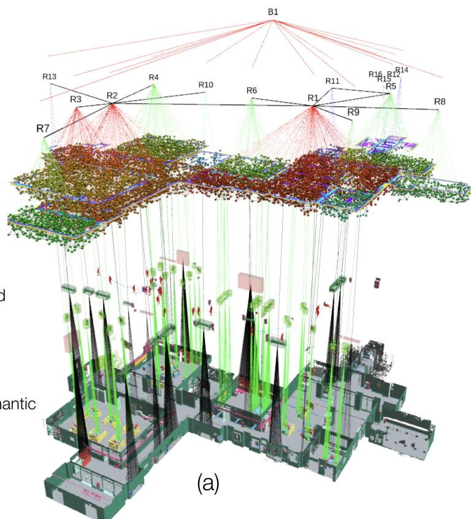
Layer 1: Metric-Semantic Mesh
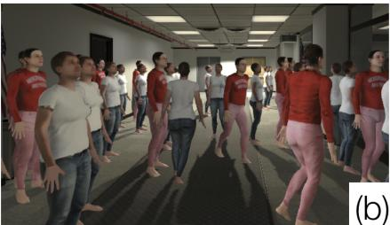
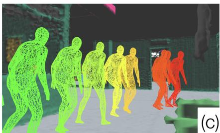
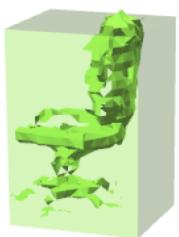
(d)
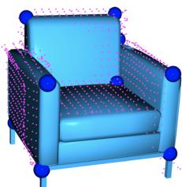
(e)
Figure 1. (a) A 3D Dynamic Scene Graph (DSG) is a layered and hierarchical representation that abstracts a dense 3D model (e.g., a metric-semantic mesh) into higher-level spatial concepts (e.g., objects, agents, places, rooms) and models their spatio-temporal relations (e.g., “agent A is in room B at time t”). Kimera is the first Spatial Perception Engine that reconstructs a DSG from visual-inertial data, and (a) segments places, structures (e.g., walls), and rooms, (b) is robust to extremely crowded environments (c) tracks dense mesh models of human agents in real time, (d) estimates centroids and bounding boxes of objects of unknown shape, (e) estimates the 3D pose of objects for which a CAD model is given.
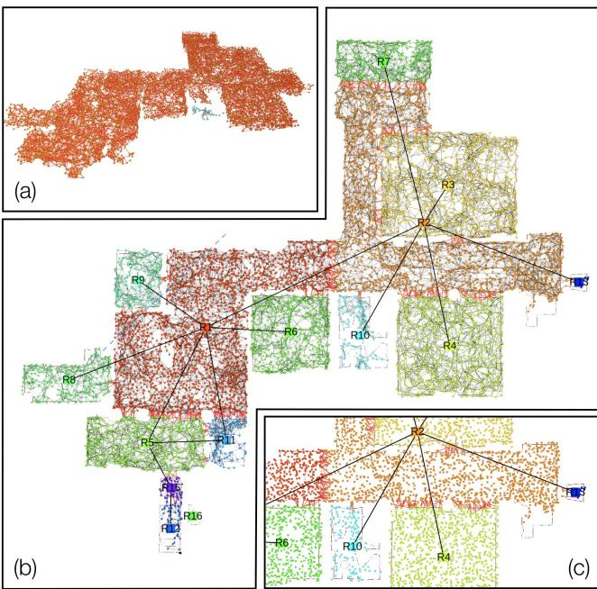
Figure 2. Places and their connectivity shown as a graph. (a) Skeleton (places and topology) produced by (Oleynikova et al. 2018) (side view); (b) Room parsing produced by our approach (top-down view); (c) Zoomed-in view; red edges connect different rooms.
2.2 Layer 2: Objects and Agents
This layer contains two types of nodes: objects and agents (Figure 1(c-e)), whose main distinction is the fact that agents are time-varying entities, while objects are static.
Objects represent static elements in the environment that are not considered structural (i.e., walls, floor, ceiling, pillars are considered structure and are not modeled in this layer). Each object is a node and node attributes include (i) a 3D object pose, (ii) a bounding box, and (ii) its semantic class (e.g., chair, desk). While not investigated in this paper, we refer the reader to (Armeni et al. 2019) for a more comprehensive list of attributes, including materials and affordances. Edges between objects describe relations, such as co-visibility, relative size, distance, or contact (“the cup is on the desk”). Each object node is connected to the corresponding set of points belonging to the object in the Metric-Semantic Mesh. Moreover, each object is connected to the nearest reachable place node (see Section 2.3).
Agents represent dynamic entities in the environment, including humans. In general, there might be many types of dynamic entities (e.g., animals, vehicles, or bicycles in outdoor environments). In this paper, we focus on two classes: humans and robots. ‡ Our approach to track dynamic agents relies solely on defining which labels are considered to be dynamic in the semantic segmentations of the 2D images.
Both human and robot nodes have three attributes: (i) a 3D pose graph describing their trajectory over time, (ii) a mesh model describing their (non-rigid) shape, and (iii) a semantic class (i.e., human, robot). A pose graph (Cadena et al. 2016) is a collection of time-stamped 3D poses where edges model pairwise relative measurements. The robot collecting the data is also modeled as an agent in this layer.
2.3 Layer 3: Places and Structures
This layer contains two types of nodes: places and structures. Intuitively, places are a model for the free space, while structures capture separators between different spaces.
Places (Figure 2) correspond to positions in the freespace and edges between places represent traversability (in particular: presence of a straight-line path between places). Places and their connectivity form a topological map (Ranganathan and Dellaert 2004; Remolina and Kuipers 2004) that can be used for path planning. Place attributes only include a 3D position, but can also include a semantic class (e.g., back or front of the room) and an obstacle-free bounding box around the place position. Each object and agent in Layer 2 is connected with the nearest place (for agents, the connection is for each time-stamped pose, since agents move from place to place). Places belonging to the same room are also connected to the same room node in Layer 4. Figure 2(b-c) shows a visualization with places color-coded by rooms.
Structures (Figure 3) include nodes describing structural elements in the environment, e.g., walls, floor, ceiling, pillars. The notion of structure captures elements often called “stuff” in related work (Li et al. 2018a). Structure nodes’ attributes are: (i) 3D pose, (ii) bounding box, and (iii) semantic class (e.g., walls, floor). Structures may have edges to the rooms they enclose. Structures may also have edges to an object in Layer 3, e.g., a “frame” (object) “is hung” (relation) on a “wall” (structure), or a “ceiling light is mounted on the ceiling”.
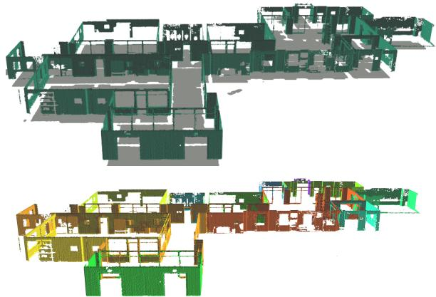
Figure 3. Structures: exploded view of walls and floor (top). Segmented walls according to the room id (bottom).
2.4 Layer 4: Rooms
This layer includes nodes describing rooms, corridors, and halls. Room nodes (Figure 2) have the following attributes: (i) 3D pose, (ii) bounding box, and (iii) semantic class (e.g., kitchen, dining room, corridor). Two rooms are connected by an edge if they are adjacent (i.e., there is a door connecting them). A room node has edges to the places (Layer 3) it contains (since each place is connected to nearby objects, the DSG also captures which object/agent is contained in each room). All rooms are connected to the building they belong to (Layer 5).
2.5 Layer 5: Building
Since we are considering a representation over a single building, there is a single building node with the following attributes: (i) 3D pose, (ii) bounding box, and (iii) semantic class (e.g., office building, residential house). The building node has edges towards all rooms in the building.
2.6 Composition and Queries
Why should we choose this set ofnodes or edges rather than a different one? Clearly, the choice of nodes in the DSG is not unique and is task-dependent. Here we first motivate our choice of nodes in terms of planning queries the DSG is designed for (see Remark 1 and the broader discussion in Section 5), and we then show that the representation is compositional, in the sense that it can be easily expanded to encompass more layers, nodes, and edges (Remark 2).
Remark 1. Planning Queries. The proposed DSG is designed with task and motion planning queries in mind. The semantic node attributes (e.g., semantic class) support planning from high-level specification (“pick up the red cup from the table in the dining room”). The geometric node attributes (e.g., meshes, positions, bounding boxes) and the edges are used for motion planning. For instance, the places can be used as a topological graph for path planning, and the bounding boxes can be used for fast collision checking.
Remark 2. Composition of DSGs. A second re-ensuring property of a DSG is its compositionality: one can easily concatenate more layers at the top and the bottom of the DSG in Figure 1(a), and even add intermediate layers. For instance, in a multi-story building, we can include a “Level” layer between the “Building” and “Rooms” layers in Figure 1(a). Moreover, we can add further abstractions or layers at the top, for instance going from buildings to neighborhoods, and then to cities.
3 Kimera: Spatial Perception Engine
This section describes Kimera, our Spatial Perception Engine, that populates the DSG nodes and edges using sensor data. The input to Kimera is streaming data from a stereo or RGB-D camera, and an Inertial Measurement Unit (IMU). The output is a 3D DSG. In our current implementation, the metric-semantic mesh and the agent nodes are incrementally built from sensor data in real-time, while the remaining nodes (objects, places, structure, rooms) are automatically built at the end of the run.
Kimera-Core. We use Kimera-Core (Rosinol et al. 2020a) to reconstruct a semantically annotated 3D mesh from visual-inertial data in real-time (Figure 4). Kimera-Core is open source and includes four main modules: (i) Kimera-VIO: a visual-inertial odometry module implementing IMU preintegration and fixed-lag smoothing (Forster et al. 2017), (ii) Kimera-PGMO: a robust pose graph and mesh optimizer, that generalizes Kimera-RPGO, which only optimized the pose graph. (iii) Kimera-Mesher: a per-frame and multiframe mesher (Rosinol et al. 2019), and (iv) Kimera-Semantics: a volumetric approach to produce a semantically annotated mesh and an Euclidean Signed Distance Function (ESDF) based on Voxblox (Oleynikova et al. 2017). Kimera Semantics uses a 2D semantic segmentation of the camera images to label the 3D mesh using Bayesian updates. We take the metric-semantic mesh produced by Kimera-Semantics and optimized by Kimera-PGMO as Layer 1 in the DSG in Figure 1(a).
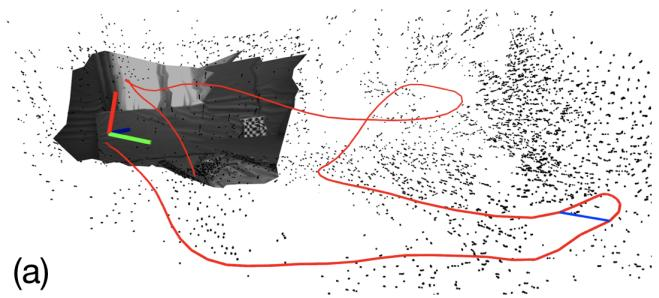
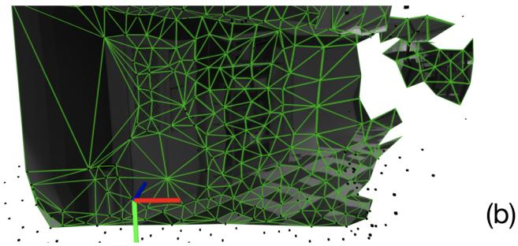
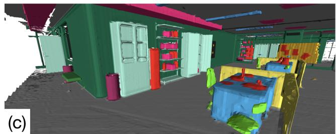
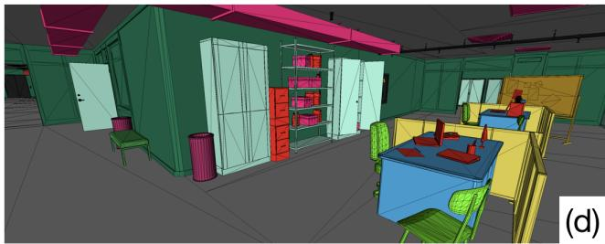
Figure 4. Kimera-Core is an open-source library for real-time metric-semantic SLAM. It provides (a) visual-inertial state estimates at IMU rate (Kimera-VIO), and a globally consistent and outlier-robust trajectory estimate (Kimera-RPGO), computes (b) a low-latency local mesh of the scene (Kimera-Mesher), and builds (c) a semantically annotated 3D mesh (Kimera-Semantics), which can be optimized for global consistency (Kimera-PGMO) and accurately reflects the ground truth model (d).
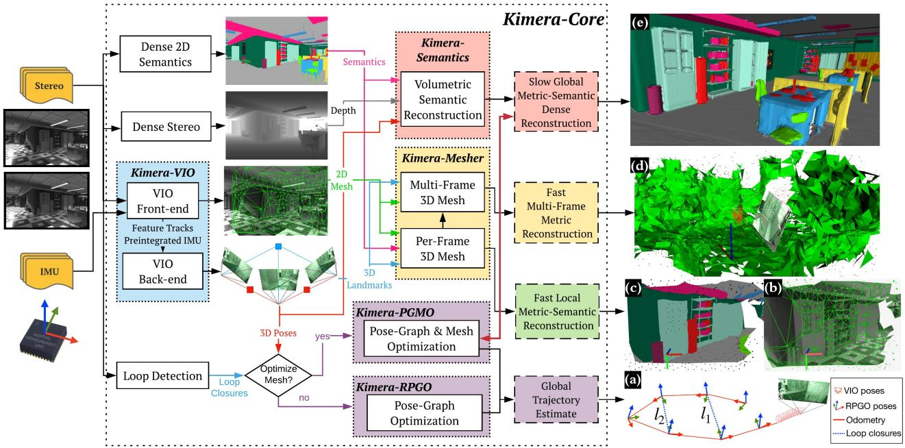
Figure 5. Kimera-Core’s architecture. Kimera-Core uses stereo images (or RGB-D) and IMU data as input (shown on the left) and outputs (a) pose estimates and (b-e) multiple metric-semantic reconstructions. Kimera-Core has four key modules: Kimera-VIO, Kimera-PGMO (alternatively, Kimera-RPGO), Kimera-Mesher, and Kimera-Semantics.
Figure 5 shows Kimera-Core’s architecture. Kimera takes stereo frames and high-rate inertial measurements as input and returns (i) a highly accurate state estimate at IMU rate, (ii) a globally-consistent trajectory estimate, and (iii) multiple meshes of the environment, including a fast local mesh and a global semantically annotated mesh. Kimera-Core is heavily parallelized and uses five threads to accommodate inputs and outputs at different rates (e.g., IMU, frames, keyframes). Here we describe the architecture by threads, while the description of each module is given in the following sections.
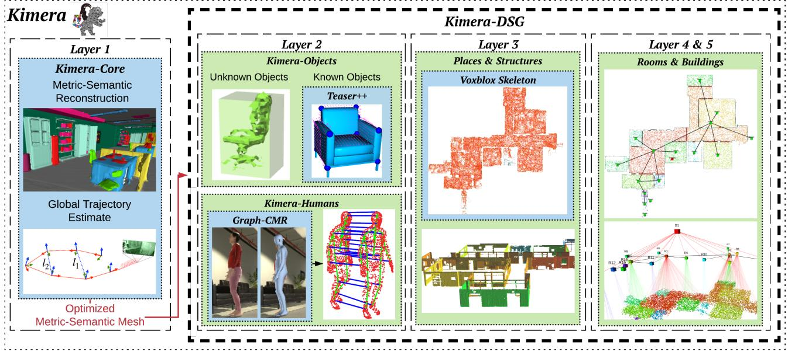
Figure 6. Kimera’s architecture, with Kimera-Core and Kimera-DSG as sub-modules. Kimera-Core generates a globally consistent 3D metric-semantic mesh (Figure 5) that represents the first layer of the DSG and is further used by Kimera-DSG to build the subsequent layers. Kimera-DSG further comprises three key modules: Kimera-Objects, Kimera-Humans, and Kimera-BuildingParser (which generates layers 3 to 5).
The first thread includes the Kimera-VIO front-end (Section 3.1) that takes stereo images and IMU data, and outputs feature tracks and preintegrated IMU measurements. The front-end also publishes IMU-rate state estimates. The second thread runs Kimera-VIO’s back-end, and outputs optimized state estimates (most importantly, the robot’s 3D pose). The third thread runs Kimera-Mesher (Section 3.2), that computes low-latency (< 20ms) per-frame and multiframe 3D meshes. These three threads allow creating the per-frame mesh in Figure 5(b) (which can also come with semantic labels as in Figure 5(c)), as well as the multiframe mesh in Figure 5(d). The next two threads operate at slower rates and are designed to support low-frequency functionalities, such as path planning. The fourth thread includes Kimera-Semantics (Section 3.3), that uses a depth map, from RGB-D or dense-stereo, and 2D semantic labels to obtain a metric-semantic mesh, using the pose estimates from Kimera-VIO. The last thread includes Kimera-PGMO (Section 3.4), that uses the detected loop closures, together with Kimera-VIO’s pose estimates and Kimera-Semantics 3D metric-semantic mesh, to estimate a globally consistent trajectory (Figure 5(a)) and 3D metric-semantic mesh (Figure 5(e)). As shown in Figure 5, Kimera-RPGO can be used instead of Kimera-PGMO if the optimized 3D metricsemantic mesh is not required.
Kimera-DSG. Here we describe Kimera-DSG’s architec ture layer by layer, while the description of each module is given in the following sections. We use Kimera-DSG to build the DSG from the globally consistent 3D metricsemantic mesh generated by Kimera-Core, which represents the DSG’s first layer, as shown in Figure 6. Then, Kimera-DSG builds the second layer containing objects and agents. For the objects, Kimera-Objects (Section 3.6) either estimates a bounding box for the objects of unknown shape or fits a CAD model for the objects of known shape using TEASER++ (Yang et al. 2020). Kimera-Humans (Section 3.5) reconstructs dense meshes of humans in the scene using GraphCMR (Kolotouros et al. 2019b), and estimates their trajectories using a pose graph model. Then, Kimera-BuildingParser (Section 3.7) generates the remaining three layers. It first generates layer 3 by parsing the metricsemantic mesh to identify structures (i.e., walls, ceiling), and further extracts a topological graph of places using (Oleynikova et al. 2018). Then, Kimera-BuildingParser generates layer 4 by segmenting layer 3 into rooms, and generates layer 5 by further segmenting layer 4 into buildings.
3.1 Kimera-VIO: Visual-Inertial Odometry
Kimera-VIO implements the keyframe-based maximum-aposteriori visual-inertial estimator presented in (Forster et al. 2017). In our implementation, the estimator can perform both full smoothing or fixed-lag smoothing, depending on the specified time horizon; we typically use the latter to bound the estimation time. Kimera-VIO includes a (visual and inertial) front-end which is in charge of processing the raw sensor data, and a back-end, that fuses the processed measurements to obtain an estimate of the state of the sensors (i.e., pose, velocity, and sensor biases).
VIO Front-end. Our IMU front-end performs onmanifold preintegration (Forster et al. 2017) to obtain compact preintegrated measurements of the relative state between two consecutive keyframes from raw IMU data. The vision front-end detects Shi-Tomasi corners (Shi and Tomasi 1994), tracks them across frames using the Lukas-Kanade tracker (Bouguet 2000), finds left-right stereo matches, and performs geometric verification. We perform both mono(cular) verification using 5-point RANSAC (Nistér 2004) and stereo verification using 3-point RANSAC (Horn 1987); the code also offers the option to use the IMU rotation and perform mono and stereo verification using 2- point (Kneip et al. 2011) and 1-point RANSAC, respectively. Since our robot moves in crowded (dynamic) environments, we seed the Lukas-Kanade tracker with an initial guess (of the location of the corner being tracked) given by the rotational optical flow estimated from the IMU, similar to (Hwangbo et al. 2009). Moreover, we default to using 2- point (stereo) and 1-point (mono) RANSAC, which uses the IMU rotation to prune outlier correspondences in the feature tracks. Feature detection, stereo matching, and geometric verification are executed at each keyframe, while we track features at intermediateframes.
VIO Back-end. At each keyframe, preintegrated IMU and visual measurements are added to a fixed-lag smoother (a factor graph) which constitutes our VIO back-end. We use the preintegrated IMU model and the structureless vision model of (Forster et al. 2017). The factor graph is solved using iSAM2 (Kaess et al. 2012) in GTSAM (Dellaert 2012). At each iSAM2 iteration, the structureless vision model estimates the 3D position of the observed features using DLT (Hartley and Zisserman 2004) and analytically eliminates the corresponding 3D points from the VIO state (Carlone et al. 2014). Before elimination, degenerate points (i.e., points behind the camera or without enough parallax for triangulation) and outliers (i.e., points with large reprojection error) are removed, providing an extra robustness layer. Finally, states that fall out of the smoothing horizon are marginalized out using GTSAM.
3.2 Kimera-Mesher: 3D Mesh Reconstruction
Kimera-Mesher can quickly generate two types of 3D meshes: (i) a per-frame 3D mesh, and (ii) a multi-frame 3D mesh spanning the keyframes in the VIO fixed-lag smoother.
Per-frame mesh. As in (Rosinol et al. 2019), we first perform a 2D Delaunay triangulation over the successfully tracked 2D features (generated by the VIO front-end) in the current keyframe. Then, we back-project the 2D Delaunay triangulation to generate a 3D mesh (Figure 5(b)), using the 3D point estimates from the VIO back-end. While the per-frame mesh is designed to provide low-latency obstacle detection, we also provide the option to semantically label the resulting mesh, by texturing the mesh with 2D labels (Figure 5(c)).
Multi-frame mesh. The multi-frame mesh fuses the perframe meshes collected over the VIO receding horizon into a single mesh (Figure 5(d)). Both per-frame and multiframe 3D meshes are encoded as a list of vertex positions, together with a list of triplets of vertex IDs to describe the triangular faces. Assuming we already have a multi-frame mesh at time t − 1, for each new per-frame 3D mesh that we generate (at time t), we loop over its vertices and triplets and add vertices and triplets that are in the per-frame mesh but are missing in the multi-frame one. Then we loop over the multi-frame mesh vertices and update their 3D position according to the latest VIO back-end estimates. Finally, we remove vertices and triplets corresponding to old features observed outside the VIO time horizon. The result is an upto-date 3D mesh spanning the keyframes in the current VIO time horizon. If planar surfaces are detected in the mesh, regularity factors (Rosinol et al. 2019) are added to the VIO back-end, which results in a tight coupling between VIO and mesh regularization, see (Rosinol et al. 2019) for further details.
3.3 Kimera-Semantics: 3D Metric-Semantic Reconstruction
We adapt the bundled raycasting technique introduced by Oleynikova et al. (2017) to (i) build an accurate global 3D mesh (covering the entire trajectory), and (ii) semantically annotate the mesh.
Global mesh. Our implementation builds on Voxblox (Oleynikova et al. 2017) and uses a voxel-based (TSDF) model to filter out noise and extract the global mesh. At each keyframe, we obtain depth maps using dense stereo (semi-global matching (H. Hirschmüller 2008)) to obtain a 3D point cloud, or from RGB-D if available. Then, we run bundled raycasting using Voxblox (Oleynikova et al. 2017). This process is repeated at each keyframe and produces a TSDF, from which a mesh is extracted using marching cubes (Lorensen and Cline 1987).
Semantic annotation. Kimera-Semantics uses 2D semantically labeled images (produced at each keyframe) to semantically annotate the global mesh; the 2D semantic labels can be obtained using off-the-shelf tools for pixel-level 2D semantic segmentation, e.g., deep neural networks (Lang et al. 2019; Zhang et al. 2019a; Chen et al. 2017; Zhao et al. 2017; Yang et al. 2018; Paszke et al. 2016; Ren et al. 2015; He et al. 2017; Hu et al. 2017). In our real-life experiments, we use Mask-RCNN (He et al. 2017). Then, during the bundled raycasting, we also propagate the semantic labels. Using the 2D semantic segmentation, we attach a label to each 3D point produced by dense stereo. Then, for each bundle of rays in the bundled raycasting, we build a vector of label probabilities from the frequency of the observed labels in the bundle. We then propagate this information along the ray only within the TSDF truncation distance (i.e., near the surface) to spare computation. In other words, we spare the computational effort of updating probabilities for the “empty” label. While traversing the voxels along the ray, we use a Bayesian update to estimate the posterior label probabilities at each voxel, similar to (McCormac et al. 2017). After bundled semantic raycasting, each voxel has a vector of label probabilities, from which we extract the most likely label. The metric-semantic mesh is finally also extracted using marching cubes (Lorensen and Cline 1987). The resulting mesh is significantly more accurate than the multi-frame mesh of Section 3.2, but it is slower to compute (≈ 0.1s, see Section 4.8).
3.4 Kimera-PGMO: Pose Graph and Mesh Optimization with Loop Closures
The mesh from Kimera-Semantics is built from the poses from Kimera-VIO and drifts over time. The loop closure module detects loop closures to correct the global trajectory and the mesh. The mesh is corrected via a deformation, since this is more scalable compared to rebuilding the mesh from scratch or using ‘de-integration’ (Dai et al. 2017). This is achieved via a novel simultaneous pose graph and mesh deformation approach which utilizes an embedded deformation graph that optimizes in a single run the environment and the robot trajectory. The optimization is formulated as a factor graph in GTSAM. In the following, we review the individual components.
Loop Closure Detection. The loop closure detection relies on the DBoW2 library (Gálvez-López and Tardós 2012) and uses a bag-of-word representation with ORB
(b)
descriptors to quickly detect putative loop closures. For each putative loop closure, we reject outlier loop closures using mono 5-point RANSAC (Nistér 2004) and stereo 3-point RANSAC (Horn 1987) geometric verification, and pass the remaining loop closures to the outlier rejection and pose solver. Note that the resulting loop closures can still contain outliers due to perceptual aliasing (e.g., two identical rooms on different floors of a building). While most open-source SLAM algorithms, such as ORB-SLAM3 (Campos et al. 2021), VINS-Mono (Qin et al. 2018), Basalt (Usenko et al. 2019), are overly cautious when accepting loop-closures, by fine-tuning DBoW2 for example, we instead make our backend robust to outliers, as we explain below.
Outlier Rejection. We filter out bad loop closures with a modern outlier rejection method, Pairwise Consistent Measurement Set Maximization (PCM) (Mangelson et al. 2018), that we tailor to a single-robot and online setup. We store separately the odometry edges (produced by Kimera-VIO) and the loop closures (produced by the loop closure detection); each time a loop closure is detected, we select inliers by finding the largest set of consistent loop closures using a modified version of PCM.
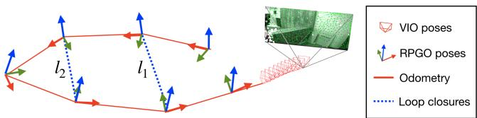
Figure 7. Kimera-RPGO detects visual loop closures, rejects spurious loop closures, and estimates a globally consistent trajectory. In contrast to Kimera-PGMO, Kimera-RPGO does not optimize the 3D mesh.
The original PCM is designed for the multi-robot case and only checks that inter-robot loop closures are consistent. We developed an implementation of PCM that (i) adds an odometry consistency check on the loop closures and (ii) incrementally updates the set of consistent measurements to enable online operation. The odometry check verifies that each loop closure in Figure 7) is consistent with the odometry (in red in the figure): in the absence of noise, the poses along the cycle formed by the odometry and the loop must compose to the identity. As in PCM, we flag as outliers loops for which the error accumulated along the cycle is not consistent with the measurement noise using a Chi-squared test. If a loop detected at the current time t passes the odometry check, we test if it is pairwise consistent with previous loop closures as in (Mangelson et al. 2018) (e.g., check if loops and in Figure 7 are consistent with each other). While PCM (Mangelson et al. 2018) builds an adjacency matrix from scratch to keep track of pairwise-consistent loops (where L is the number of detected loop closures), we enable online operation by building the matrix A incrementally. Each time a new loop is detected, we add a row and column to the matrix A and only test the new loop against the previous ones. Finally, we use the fast maximum clique implementation of (Pattabiraman et al. 2015) to compute the largest set of consistent loop closures. The set of consistent measurements are added to the pose graph (together with the odometry).
Pose Graph and Mesh Optimization. When a loop closure passes the outlier rejection, either Kimera-RPGO optimizes the pose graph of the robot trajectory (Figure 7) or Kimera-PGMO simultaneously optimizes the mesh and the trajectory (Figure 8). The user can select the solver depending on the computational considerations and the need for a consistent map; see Remark 3. Note that Kimera-PGMO is a strict generalization of Kimera-RPGO as described in (Rosinol et al. 2020a). For Kimera-PGMO, the deformation of the mesh induced by the loop closure is based on deformation graphs (Sumner et al. 2007). In our approach, we create a unified deformation graph including a simplified mesh and a pose graph of robot poses. We simplify the mesh with an online vertex clustering method by storing the vertices of the mesh in an octree data structure; as the mesh grows, the vertices in the same voxel of the octree are merged and degenerate faces and edges are removed. The voxel size is tuned according to the environment or the dataset (1 to 4 meters in our tests).
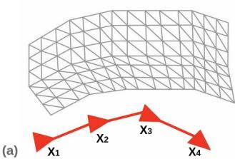
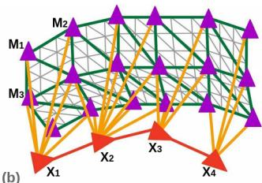
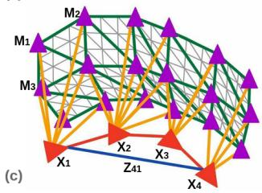
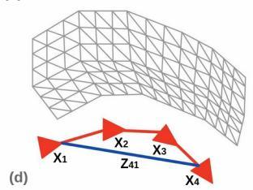
Figure 8. Kimera-PGMO’s mesh deformation and pose graph optimization. (a) shows the received mesh and the pose graph with no loop closures detected yet. (b) shows the creation of the deformation graph where the red vertices are the pose vertices with associated transform X and purple vertices are the mesh vertices with associated transform Mi. The green edges are the edges describing the connectivity of the simplified mesh, which are also the edges connecting the mesh vertices to each other in the deformation graph. The yellow edges are the edges connecting the pose vertices to the mesh vertices based on visibility from the camera. (c) shows the deformation that happens when a loop closure (the blue edge) between pose graph node 4 and node 1 is added. Xi and Mi have been updated based on the optimization results. (d) shows the optimized mesh and pose graph.
We add two types of vertices to the deformation graph: mesh vertices and pose vertices. The mesh vertices correspond to the vertices of the simplified mesh and have an associated transformation $M _ { k } = \left\lceil \begin{array} { c c } { R _ { k } ^ { M } } & { t _ { k } ^ { M } } \ { \mathbf { 0 } ^ { \top } } & { 1 } \end{array} \right\rceilR _ { k } ^ { M } = { \bf I } _ { 3 }\pmb { t } _ { k } ^ { M } = \pmb { g } _ { k }\mathbf { \nabla } _ { \mathbf { \boldsymbol { g } } _ { k } }\pmb { R } _ { k } ^ { M }\pmb { t } _ { k } ^ { M } - \tilde { g } _ { k }$ is the local translation. Mesh vertices are connected to each other using the edges of the simplified mesh (the green edges in Figure 8).
We then add the nodes of the robot pose graph to the deformation graph as pose vertices with associated transformation $X _ { i } = \left\lceil \begin{array} { l l } { R _ { i } ^ { X } } & { t _ { i } ^ { X } } \ { { \mathbf 0 } ^ { \top } } & { 1 } \end{array} \right\rceil$ . When the mesh is not yet deformed, Xi is just the odometric pose for node i. The pose vertices are connected according to the original connectivity of the pose graph (the red edges in Figure 8). A pose vertex i is connected to the mesh vertex k if the mesh vertex k is visible by the camera associated to pose i.
Figure 8 showcases the components and creation of the deformation graph, noting the pose and mesh vertices and the edges, and the deformation that happens when a loop closure is detected. Based on the loop closure and odometry measurements and given n pose vertices and m mesh vertices, the deformation graph optimization is as follows:
where indicates the neighboring mesh vertices to a vertex i in the deformation graph and denotes the nondeformed (initial) world frame position of mesh or pose vertex i in the deformation graph, and denotes the nondeformed position of vertex l in the coordinate frame of the odometric pose of node i (note that except when the undeformed orientation of node i is identity.).
The first term in the optimization enforces the odometric and loop closure measurements on the poses in the pose graph, these are the same as in standard pose graph optimization (Cadena et al. 2016); the second term is adapted from (Sumner et al. 2007) and enforces local rigidity between mesh vertices by minimizing the change in relative translation between connected mesh vertices preserving the edge connecting two mesh vertices); the third term enforces the local rigidity between a pose vertex i and a mesh vertex l, again by minimizing the change in relative translation between the two vertices. Note that ||·||Ω indicates the weighted Frobenius norm
where Ω takes the form $\left\lceil \begin{array} { c c } { \omega _ { R } \pmb { I } _ { 3 } } & { \mathbf { 0 } } \ { \mathbf { 0 } ^ { \top } } & { \omega _ { t } } \end{array} \right\rceil\omega _ { R }\omega _ { t }$ respectively corresponding to the rotation and translation weights, as defined in (Briales and Gonzalez-Jimenez 2017).
In the following , we show that eq. (1) can be formulated as an augmented pose graph optimization problem. Towards this goal, we define as the initial odometric rotation of pose vertex i in the deformation graph; we then define,
and rewrite the optimization as,
where is the set of all odometry and loop closures edges in the deformation graph (the red and blue edges in Figure 8), G is the set edges from the simplified mesh (the green edges in Figure 8), and is the set of all the edges connecting a pose vertex to a mesh vertex (the yellow edges in Figure 8). We only optimize over translation in the second and third term hence the rotation weights for and are set to zero. Taking it one step further and observing that the terms are all based on the edges in the deformation graph, we can define as the transformation of pose or mesh vertex i and is the transformation that corresponds to an edge in the deformation graph that is of the form depending on the type of edge. With this reparametrization, we are left with a pose graph optimization problem akin to the ones found in the literature (Rosen et al. 2018; Cadena et al. 2016).
Note that the deformation graph approach, as originally presented in (Sumner et al. 2007), is equivalent to pose graph optimization only when rotations are used in place of affine transformations. The pose graph is then optimized using GTSAM.
After the optimization, the positions of the vertices of the complete mesh are updated as affine transformations of the nodes in the deformation graph:
where indicates the original vertex positions and are the new deformed positions. The weights are defined as
and then normalized to sum to one. Here is the distance to the nearest node as described in (Sumner et al. 2007) (we set .
Remark 3. Kimera-RPGO and Kimera-PGMO. Kimera-RPGO is the robust pose graph optimizer we introduced in (Rosinol et al. 2020a) which uses a modified Pairwise Consistent Measurement Set Maximization (PCM) (Mangelson et al. 2018) approach tofilter out incorrect loop closures caused by perceptual aliasing then optimizes the poses of the robot. Kimera-PGMO is a strict generalization of Kimera-RPGO. Both Kimera-RPGO and Kimera-PGMO perform loop closure detection and outlier rejection, the difference is that Kimera-PGMO additionally optimizes the mesh with extra computational cost to solve a larger pose graph. As we will see in the experimental section, Kimera-PGMO takes almost three times the time of Kimera-RPGO since it optimizes a larger graph. For instance, Kimera-PGMO optimizes 728 pose nodes and 1031 mesh nodes for the EuRoC V1_01 dataset, while Kimera-RPGO only optimizes over the 728 pose nodes.
3.5 Kimera-Humans: Human Shape Estimation and Robust Tracking
Robot Node. In our setup, the only robotic agent is the one collecting the data. Hence, Kimera-PGMO directly produces a time-stamped pose graph describing the poses of the robot at discrete time steps. To complete the robot node, we assume a CAD model of the robot to be given (only used for visualization).
Human Nodes. Contrary to related work that models dynamic targets as a point or a 3D pose (Chojnacki and Indelman 2018; Azim and Aycard 2012; Aldoma et al. 2013; Li et al. 2018b; Qiu et al. 2019), Kimera-Humans tracks a dense time-varying mesh model describing the shape of the human over time. Therefore, to create a human node Kimera-Humans needs to detect and estimate the shape of a human in the camera images, and then track the human over time.
Besides using them for tracking, we feed the human detections back to Kimera-Semantics, such that dynamic elements are not reconstructed in the 3D mesh. We achieve this by only using the free-space information when ray casting the depth for pixels labeled as humans, an approach we dubbed dynamic masking (see results in Figure 16).
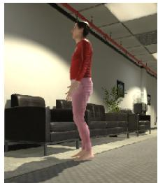
(a) Image
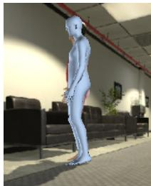
(b) Detection
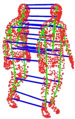
(c) Tracking
Figure 9. Human nodes: (a) Input camera image from Unity, (b) SMPL mesh detection and pose/shape estimation using (Kolotouros et al. 2019b), (c) Temporal tracking and consistency checking on the maximum joint displacement between detections.
For human shape and pose estimation, we use the Graph CNN approach of Kolotouros et al. (2019b) (GraphCMR), which directly regresses the 3D location of the vertices of an SMPL (Loper et al. 2015) mesh model from a single image. An example mesh is shown in Figure 9(a-b).
Given a pixel-wise 2D segmentation of the image, we crop the left camera image to a bounding box around each detected human, which then becomes an input to GraphCMR. GraphCMR outputs a 3D SMPL mesh for the corresponding human, as well as camera parameters (x and y image position and a scale factor corresponding to a weak perspective camera model). We then use the camera model to project the human mesh vertices into the image frame. After obtaing the projection, we then compute the location and orientation of the full-mesh with respect to the camera using PnP (Zheng et al. 2013) to optimize the camera pose based on the reprojection error of the mesh into the camera frame. The translation is recovered from the depth-image, which is used to get the approximate 3d position of the pelvis joint of the human in the image. Finally, we transform the mesh location to the global frame based on the world transformation output by the Kimera-VIO.
Human Tracking and Monitoring. The above approach relies heavily on the accuracy of GraphCMR and discards useful temporal information about the human. In fact, GraphCMR outputs are unreliable in several scenarios, especially when the human is partially occluded. In this section, we describe our method for (i) maintaining persistent information about human trajectories, (ii) monitoring GraphCMR location and pose estimates to determine which estimates are inaccurate, and (iii) mitigating human location errors through pose-graph optimization using motion priors. We achieve these results by maintaining a pose graph for each human the robot encounters and updating the pose graphs using simple but robust data association.
Pose Graph. To maintain persistent information about human location, we build a pose graph for each human where each node in the graph corresponds to the location of the pelvis of the human at a discrete time. Consecutive poses are connected by a factor (Dellaert and Kaess (2017)) modeling a zero velocity prior on the human motion with a permissive noise model to allow for small motions. The location information from GraphCMR is modelled as a prior factor, providing the estimated global coordinates at each timestep. In addition to the pelvis locations, we maintain a persistent history of the SMPL parameters of the human as well as joint locations for pose analysis.
The advantage of the pose-graph system is two-fold. First, using a pose-graph for each human’s trajectory allows for the application of pose-graph-optimization techniques to get a trajectory estimate that is smooth and robust to misdetections. Many of the detections from GraphCMR propagate to the pose-graph even if they are not immediately rejected by the consistency checks described in the next section. However, by using Kimera-RPGO and PCM outlier rejection, the pose-graphs of the humans can be regularly optimized to smooth the trajectory and remove bad detections. PCM outlier rejection is particularly good at removing detections that would require the human to move/rotate arbitrarily fast. Second, using pose graphs to model both the humans and the robot’s global trajectory allows for unified visualization tools between the two usecases. Figure 10 shows the pose graph (blue line) of a human in the office environment, as well as the detection associated with each pose in the graph (rainbow-like color-coded human mesh).
Data Association. A key issue in the process of building the pose graph is associating which nodes belong to the same human over time and then linking them appropriately. We use a simplified data association model which associates a new node with the node that has the closest euclidean distance to it. This form of data association works well under the mild assumption that the distance a human moves between timesteps is smaller than the distance between humans.
We do not have information for when a human enters the frame and when they leave (although we do know the number of people in a given frame). To avoid associating new humans with the pose graphs of previous humans, we add a spatiotemporal consistency check before adding the pose to the human’s pose-graph, as discussed below.
To check consistency, we extract the human skeleton at time t − 1 (from the pose graph) and t (from the current detection) and check that the motion of each joint (Figure 9(c)) is physically plausible in that time interval (i.e., we leverage the fact that the joint and torso motion cannot be arbitrarily fast). This check is visualized in Figure 9(c). We first ensure that the rate of centroid movement is plausible between the two sets of skeletons. Median human walking speed being about 1.25 m/s (Schimpl et al. 2011), we use a conservative 3m/s bound on the movement rate to threshold the feasibility for data association. In addition, we use a conservative bound of 3mon the maximum allowable joint displacement to bound irregular joint movements.
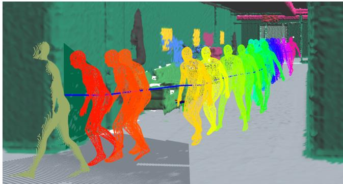
Figure 10. Human Pose-Graph: Optimized pose-graph (blue line) for a single human. The detected human shape is shown as a 3D mesh, color-coded from the most recent detection in red to the oldest one in pink.
The data association check is made more robust by using the beta-parameters of the SMPL model (Loper et al. 2015), which encode the various shape attributes of the mesh in 8 floating-point parameters. These shape parameters include, for example, the width and height of different features of the human model. We check the current detection’s beta parameters against those of the skeleton at time t − 1 and ensure that the average of the difference between each pair of beta parameters does not exceed a certain threshold (0.1 in our experiments). This helps to differentiate humans from each other based on their appearance. In Kimera-Humans, the beta parameters are estimated by GraphCMR (Kolotouros et al. 2019b).
If the centroid movement and joint movement between the timesteps are within the bounds and the beta-parameter check passes, we add the new node to the pose graph that has the closest final node as described earlier. If no pose graph meets the consistency criteria, we initialize a new pose graph with a single node corresponding to the current detection.
Node Error Monitoring and Mitigation. As mentioned earlier, GraphCMR outputs are very sensitive to occluded humans, and prediction quality is poor in those circumstances. To gain robustness to simple occlusions, we mark detections when the bounding box of the human approaches the boundary of the image or is too small (≤ 30 pixels in our tests) as incorrect. In addition, we use the size of the pose graph as a proxy to monitor the error of the nodes. When a pose graph has few nodes, it is highly likely that those nodes are erroneous. We determined through experimental results that pose graphs with fewer than 10 nodes tend to have extreme errors in human location. We mark those graphs as erroneous and remove them from the DSG, a process we refer to as pose-graph pruning. This is similar to removing short feature tracks in visual tracking. Finally, we mitigate node errors by running optimization over the pose graphs using the stationary motion priors and we see that we can achieve a great reduction in existing errors.
3.6 Kimera-Objects: Object Pose Estimation
Within Kimera-DSG, Kimera-Objects is the module that extracts static objects from the optimized metric-semantic mesh produced by Kimera-PGMO. We give the user the flexibility to provide a catalog of CAD models for some of the object classes. If a shape is available, Kimera-Objects will try to fit it to the mesh (paragraph “Objects with Known Shape” below), otherwise it will only attempt to estimate a centroid and a bounding box (paragraph “Objects with Unknown Shape”).
Objects with Unknown Shape. The optimized metricsemantic mesh from Kimera-PGMO already contains semantic labels. Therefore, Kimera-Objects first extracts the portion of the mesh belonging to a given object class (e.g., chairs in Figure 1(d)); this mesh contains multiple objects belonging to the same class. To break down the mesh into multiple object instances, Kimera-Objects performs Euclidean clustering using PCL (Rusu and Cousins 2011) (with a distance threshold of twice the voxel size, 0.05m, used in Kimera-Semantics, that is 0.1 m). From the segmented clusters, Kimera-Objects obtains a centroid of the object (from the vertices of the corresponding mesh), and assigns a canonical orientation with axes aligned with the world frame. Finally, it computes a bounding box with axes aligned with the canonical orientation.
Objects with Known Shape. if a CAD model for a class of objects is given, Kimera-Objects will attempt to fit the known shape to the object mesh. This is done in three steps. First, Kimera-Objects extracts 3D keypoints from the CAD model of the object, and the corresponding object mesh. The 3D keypoints are extracted by transforming each mesh to a point cloud (by picking the vertices of the mesh) and then extracting 3D Harris keypoints (Rusu and Cousins 2011) with 0.15m radius and non-maximum suppression threshold. Second, we match every keypoint on the CAD model with any keypoint on the Kimera model. Clearly, this step produces many incorrect putative matches (outliers). Third, we apply a robust open-source registration technique, TEASER++ (Yang et al. 2020), to find the best alignment between the point clouds in the presence of extreme outliers. The output of these three steps is a 3D pose of the object (from which it is also easy to extract an axisaligned bounding box), see result in Figure 1(e).
3.7 Kimera-BuildingParser: Extracting Places, Rooms, and Structures
Kimera-BuildingParser implements simple-yet-effective methods to parse places, structures, and rooms from Kimera’s 3D mesh.
Places. Kimera-Semantics uses Voxblox (Oleynikova et al. 2017) to extract a global mesh and an ESDF. We also obtain a topological graph from the ESDF using (Oleynikova et al. 2018), where nodes sparsely sample the free space, while edges represent straight-line traversability between two nodes. We directly use this graph to extract the places and their topology (Figure 2(a)). After creating the places, we associate each object and agent pose to the nearest place to model a proximity relation.
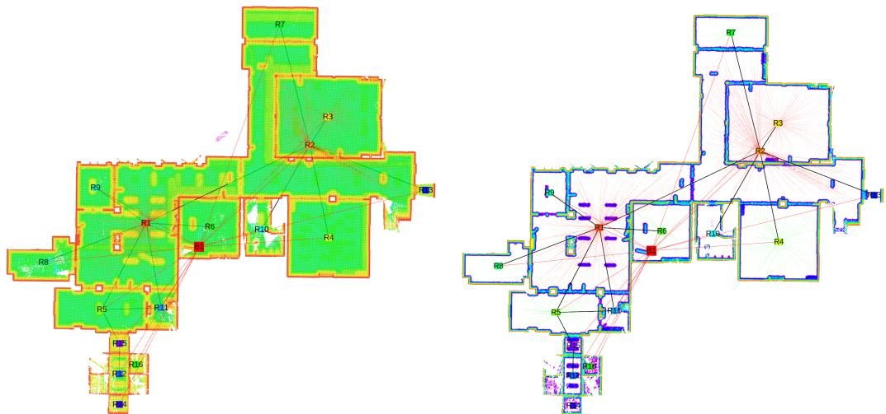
Figure 11. (Left) 2D slice of 3D ESDF. The euclidean distance is color coded from red (0m) to green (0.5m). (Right) Truncated (≤ 0.10m) 2D ESDF, revealing the room’s contours. Overlaid in both figures are the estimated room layout (square nodes) and their connectivity (black edges).
Structures. Kimera’s semantic mesh already includes different labels for walls, floor, and ceiling. Hence, isolating these three structural elements is straightforward (Figure 3). For each type of structure, we then compute a centroid, assign a canonical orientation (aligned with the world frame), and compute an axis-aligned bounding box. We further segment the walls depending on the room they belong to. To do so, we leverage the property that the 3D mesh vertices normals are oriented: the normal of each vertex points towards the camera. For each 3D vertex of the walls’ mesh, we query the nearest nodes in the places layer that are in the normal direction, and limit the search to a conservative radius (0.5m). We then use the room IDs of the retrieved places to vote for the room label of the current wall mesh vertex. To make the approach more robust to cases such as when two rooms meet (frames of doors for example), we weight the votes of the places by n·d where n is the normal (unit norm) kdk2 at the wall vertex and d is the vector from the wall vertex to the place node. This downweights votes of places that are not immediately in front and near the wall vertex.
Rooms. While floor plan computation is challenging in general, (i) the availability of a 3D ESDF and (ii) the knowledge of the gravity direction given by Kimera-VIO enable a simple-yet-effective approach to partition the environment into different rooms. The key insight is that an horizontal 2D section of the 3D ESDF, cut below the level of the detected ceiling, is relatively unaffected by clutter in the room (Figure 11). This 2D section gives a clear signature of the room layout: the voxels in the section have a value of 0.3m almost everywhere (corresponding to the distance to the ceiling), except close to the walls, where the distance decreases to 0m. We refer to this 2D ESDF (cut at 0.3m below the ceiling) as an ESDF section.
To compensate for noise, we further truncate the ESDF section to distances above 0.2m, such that small openings between rooms (possibly resulting from error accumulation) are removed. The result of this partitioning operation is a set of disconnected 2D ESDFs corresponding to each room, that we refer to as 2D ESDF rooms. Then, we label all the “Places” (nodes in Layer 3) that fall inside a 2D ESDF room depending on their 2D (horizontal) position. At this point, some places might not be labeled (those close to walls or inside door openings). To label these, we use majority voting over the neighborhood of each node in the topological graph of “Places” in Layer 3; we repeat majority voting until all places have a label. Finally, we add an edge between each place (Layer 3) and its corresponding room (Layer 4), see Figure 2(b-c), and add an edge between two rooms (Layer 4) if there is an edge connecting two of its places (red edges in Figure 2(b-c)). We also refer the reader to the second video attachment.
3.8 Debugging Tools
Kimera also provides an open-source§ suite of evaluation tools for debugging, visualization, and benchmarking of VIO, SLAM, and metric-semantic reconstruction. Kimera includes a Continuous Integration server (Jenkins) that asserts the quality of the code (compilation, unit tests), but also automatically evaluates Kimera-VIO, Kimera-RPGO, and Kimera-PGMO on the EuRoC’s datasets using evo (Grupp 2017). Moreover, we provide Jupyter Notebooks to visualize intermediate VIO statistics (e.g., quality of the feature tracks, IMU preintegration errors), as well as to automatically assess the quality of the 3D reconstruction using Open3D (Zhou et al. 2018a).
4 Experimental Evaluation
We start by introducing the datasets that we use for evaluation in Section 4.1, which feature real and simulated scenes, with and without dynamic agents, as well as a large variety of environments (indoors and outdoors, small and large). Section 4.2 shows that Kimera-VIO and Kimera-RPGO attain competitive pose estimation performance on the EuRoC dataset. Section 4.3 demonstrates Kimera’s 3D mesh geometric accuracy on EuRoC, using the subset of scenes providing a ground-truth point cloud. Section 4.4 provides a detailed evaluation of Kimera-Mesher and Kimera-Semantics’ 3D metric-semantic reconstruction on the uHumans dataset. Section 4.5 evaluates the localization and reconstruction performance of Kimera-PGMO. Section 4.6 evaluates the humans and object localization errors. Section 4.7 evaluates the accuracy of the segmentation of places into rooms. Section 4.8 highlights Kimera’s real-time performance and analyzes the runtime of each module. Furthermore, Section 4.9 shows how Kimera’s real-time performance scales when running on embedded computers. Finally, Section 4.10 qualitatively shows the performance of Kimera on real-life datasets that we collected.
4.1 Datasets
Figure 12 gives an overview of the datasets used, while their characteristics are detailed below.
4.1.1 EuRoC. We use the EuRoC dataset (Burri et al. 2016) that features a small drone flying indoors with a mounted stereo camera and an IMU. The EuRoC dataset includes eleven datasets in total, recorded in two different static scenarios. The Machine Hall scenario (MH) is the interior of an industrial facility. The Vicon Room (V) is similar to an office room. Each dataset has different levels of difficulty for VIO, where the speed of the drone increases (the larger the numeric index of the dataset the more difficult it is; e.g. MH_01 is easier for VIO than MH_03). The dataset features ground-truth localization of the drone in all datasets. Furthermore, a ground-truth pointcloud of the Vicon Room is available.
For our experimental evaluation, we use EuRoC to analyze both the localization performance of Kimera-VIO, Kimera-RPGO, and Kimera-PGMO, as well as the geometric reconstruction from Kimera-Mesher, Kimera-Semantics, and Kimera-PGMO. Since there are no dynamic elements in this dataset, nor semantically meaningful objects, we do not use it to evaluate the semantic accuracy of the mesh or the robustness to dynamic scenes.
4.1.2 uHumans and uHumans2. To evaluate the accuracy of the metric-semantic reconstruction and the robustness against dynamic elements, we use the uHumans simulated dataset that we introduced in (Rosinol et al. 2020b), and further release a new uHumans2 dataset with this paper.
uHumans and uHumans2 are generated using a photorealistic Unity-based simulator provided by MIT Lincoln Laboratory, that provides sensor streams (in ROS) and ground truth for both the geometry and the semantics of the scene, and has an interface similar to (Sayre-McCord et al. 2018; Guerra et al. 2019).
uHumans features a large-scale office space with multiple rooms, as well as a small (e.g. 12) and large (e.g. 60) number of humans in it, and it is the one reconstructed in Figure 1. Despite having different number of humans, uHumans had the issue that the trajectories for each run were not the same; thereby coupling localization errors due to dynamic humans in the scene and the intrinsic drift of the VIO. For this reason, and to extend the dataset for a variety of other scenes, we collected the uHumans2 dataset. uHumans2 features indoor scenes, such as the ‘Apartment’, the ‘Subway’, and the ‘Office’ scene, as well as the ‘Neighborhood’ outdoor scene. Note that the ‘Office’ scene in uHumans2 is the same as in uHumans, but the trajectories are different. Finally, to avoid biasing the results towards a particular 2D semantic segmentation method, we use ground truth 2D semantic segmentations and we refer the reader to Hu and Carlone (2019) for a review of potential alternatives.
4.1.3 ‘AeroAstro’, ‘School’, and ‘White Owl’. Since the uHumans and uHumans2 datasets are simulated, we further evaluate our approach on three real-life datasets that we collected. The three datasets consist of RGB-D and IMU data recorded using a hand-held device. The first dataset features a collection of student cubicles in one of the MIT academic buildings (‘AeroAstro’), and is recorded using a custommade sensing rig. The second is recorded in a ‘School’, using the same custom-made sensing rig. The third dataset is recorded in an apartment (‘White Owl’), using Microsoft’s Azure Kinect.
To collect the ‘AeroAstro’ and ‘School’ datasets, we use a custom-made sensing rig designed to mount two Intel RealSense D435i devices in a perpendicular configuration, as shown in Figure 13. While a single Intel RealSense D435i already provides the RGB-D and IMU data needed for Kimera-Core, we used two cameras with non-overlapping fields of view because the infrared pattern emitted by the depth camera is visible in the images. This infrared pattern makes the images unsuitable for feature tracking in Kimera-VIO. Therefore, we disable the infrared pattern emitter for one of the RealSense cameras, which we use for VIO. We enable the infrared emitter for the other camera to capture high-quality depth data. Since the cameras do not have an overlapping field of view, the camera used for tracking is unaffected by the infrared pattern emitted by the other camera.
Before recording the ‘AeroAstro’ and ‘School’ dataset, we calibrate the IMUs, the extrinsics, and the intrinsics of both RealSense cameras. In particular, the IMU of each RealSense device is calibrated using the provided script from Intel¶, and the intrinsics and extrinsics of all cameras are calibrated using the Kalibr toolkit (Furgale et al. 2013). Furthermore, the transform between the two RealSense devices is estimated using the Kalibr extension for IMU to IMU extrinsic calibration (Rehder et al. 2016). Since the cameras do not share the same field of view, we cannot use camera to camera extrinsic calibration. Both RealSense devices use hardware synchronization.
The ‘AeroAstro’ scene consists of an approximately 40m loop around the interior of the space that passes four cubicle groups and a kitchenette, with a standing human visible at two different times. The ‘School’ scene consists of three rooms connected by a corridor and the trajectory is approximately 20m long.
To collect the ‘White Owl’ scene, we used the Azure Kinect, as it provides a denser, more accurate depth-map than the Intel RealSense D435i (see Figure 14 for a comparison). We also calibrate the extrinsincs and intrinsics of the camera and IMU using Kalibr (Furgale et al. 2013). The ‘White Owl’ scene consists of an approximately 15m long trajectory through three rooms: a bedroom, a kitchen, and a living room. A single seated human is visible in the kitchen area.
Finally, we semantically segment the RGB images for both scenes using Mask-RCNN (He et al. 2017) with the pre-trained model weights from the COCO dataset (Abdulla 2017).
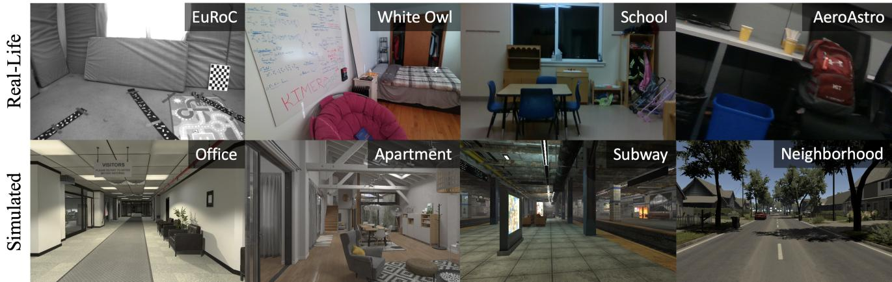
Figure 12. Overview of the datasets used for evaluation. We evaluate Kimera on a variety of datasets, both real-life (top row) and simulated (bottom row), indoors and outdoors, small and large.
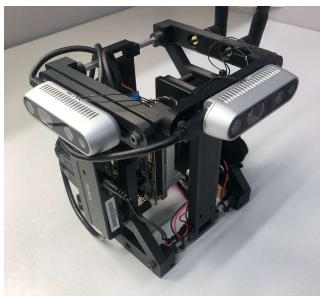
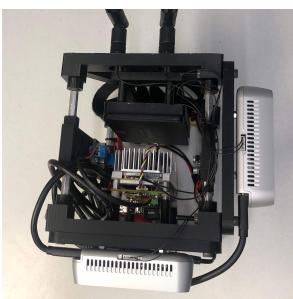
(a) perspective view
(b) top view
Figure 13. (a)-(b) Data collection rig used for reconstruction of the ‘AeroAstro’ and ‘School’ scenes, consisting of two Intel RealSense D435i devices and a NVIDIA Jetson TX2.
4.2 Pose Estimation
In this section, we evaluate the performance of Kimera-VIO and Kimera-RPGO.
Table 1 compares the Root Mean Squared Error (RMSE) of the Absolute Translation Error (ATE) of Kimera-VIO against state-of-the-art open-source VIO pipelines: OKVIS (Leutenegger et al. 2013), MSCKF (Mourikis and Roumeliotis 2007), ROVIO (Bloesch et al. 2015), VINS-Mono (Qin et al. 2018), Basalt (Usenko et al. 2019), and ORB-SLAM3 (Campos et al. 2021). using the independently reported values in (Delmerico and Scaramuzza 2018) and the self-reported values from the respective authors. Note that OKVIS, MSCKF, ROVIO, and VINS-Mono use a monocular camera, while the rest use a stereo camera. We align the estimated and ground-truth trajectories using an SE(3) transformation before evaluating the errors. Using a Sim(3) alignment, as in (Delmerico and Scaramuzza 2018), would result in an even smaller error for Kimera: we preferred the SE(3) alignment, since it is more appropriate for VIO, where the scale is observable thanks to the IMU. We group the techniques depending on whether they use fixed-lag smoothing or loop closures. Kimera-VIO, Kimera-RPGO, and Kimera-PGMO (see section 4.5) achieve competitive performance. We also compared Kimera-VIO with SVO-GTSAM (Forster et al. 2014, 2015) in our previous paper (Rosinol et al. 2020a).
Furthermore, Kimera-RPGO ensures robust performance, and is less sensitive to loop closure parameter tuning. Table 2 shows the Kimera-RPGO accuracy with and without outlier rejection (PCM) for different values of the loop closure threshold α used in DBoW2. Small values of α lead to more loop closure detections, but these are less conservative (more outliers). Table 2 shows that, by using PCM, Kimera-RPGO is fairly insensitive to the choice of α. The results in Table 1 use
4.2.1 Robustness of Pose Estimation in Dynamic Scenes. Table 4 reports the absolute trajectory errors of Kimera when using 5-point RANSAC, 2-point RANSAC, and when using 2-point RANSAC and IMU-aware feature tracking (label: DVIO). Best results (lowest errors) are shown in bold.
The rows from MH_01–V2_03, corresponding to tests on the static EuRoC dataset, confirm that, in absence of dynamic agents, the proposed approach performs on-par with the state of the art, while the use of 2-point RANSAC already boosts performance. The rest of rows (uHumans and uHumans2), further show that in the presence of an increasing number of dynamic entities (third column with number of humans), the proposed DVIO approach remains robust.
4.3 Geometric Reconstruction
We now show how Kimera’s accurate pose estimates and robustness against dynamic scenes improve the geometric accuracy of the reconstruction.
We use the ground truth point cloud available in the EuRoC V1 and V2 datasets to assess the quality of the 3D meshes produced by Kimera. We evaluate each mesh against the ground truth using the accuracy and completeness metrics as in (Rosinol 2018, Sec. 4.3): (i) we compute a point cloud by sampling our mesh with a uniform density of 103 points/m2, (ii) we register the estimated and the ground truth clouds with ICP (Besl and McKay 1992) using CloudCompare (Cloudcompare.org 2019), and (iii) we evaluate the average distance from ground truth point cloud to its nearest neighbor in the estimated point cloud (accuracy), and vice-versa (completeness).
Figure 15(a) shows the estimated cloud (corresponding to the global mesh of Kimera-Semantics on V1_01) colorcoded by the distance to the closest point in the groundtruth cloud (accuracy); Figure 15(b) shows the ground-truth cloud, color-coded with the distance to the closest-point in the estimated cloud (completeness).
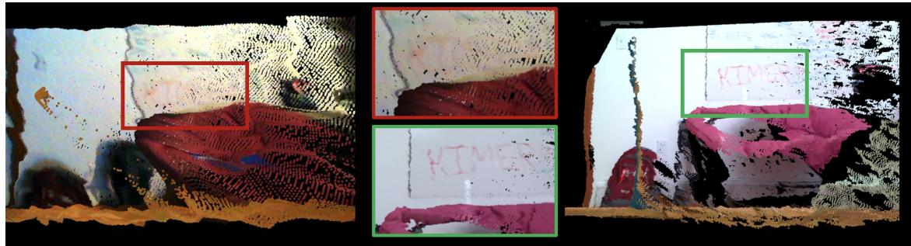
Figure 14. Side-view of the 3D point clouds generated by the Intel RealSense D435i (left) and Azure Kinect (right) RGB-D cameras of the same scene and from the same viewpoint. (Middle) Zoomed-in view shows that the Azure Kinect provides depth estimates of higher quality compared to RealSense. Despite these differences, Kimera is robust to noise, as shown in Section 4.10.
Table 1. RMSE [m] for the absolute translation error (ATE) of state-of-the-art VIO pipelines (reported from (Delmerico and Scaramuzza 2018), and the results from the respective papers) compared to Kimera, on the EuRoC dataset. In bold the best result for each category: fixed-lag smoothing, and PGO with loop closure. − indicates missing data.
| RMSE ATE [m] | ||||||||||
| Fixed-lag Smoothing | Loop Closure | |||||||||
| EuRoC Seq. | OVVIS | MSCKRE | ROΛVO | -SNIΛ Mono | K-Kimra OIΛ | O- Basalt | SLAMM3 -SNIΛ | K-Kimmra- L | K-Kimr- RPGO PGMO | |
| MH_1 | 0.16 | 0.42 | 0.21 | 0.15 | 0.11 | 0.08 | 0.04 | 0.12 | 0.13 | 0.09 |
| MH_2 | 0.22 | 0.45 | 0.25 | 0.15 | 0.10 | 0.06 | 0.03 | 0.12 | 0.21 | 0.11 |
| MH_3 | 0.24 | 0.23 | 0.25 | 0.22 | 0.16 | 0.05 | 0.04 | 0.13 | 0.12 | 0.12 |
| MH_4 | 0.34 | 0.37 | 0.49 | 0.32 | 0.16 | 0.10 | 0.05 | 0.18 | 0.12 | 0.16 |
| MH_5 | 0.47 | 0.48 | 0.52 | 0.30 | 0.15 | 0.08 | 0.08 | 0.21 | 0.15 | 0.18 |
| V1_1 | 0.09 | 0.34 | 0.10 | 0.08 | 0.05 | 0.04 | 0.04 | 0.06 | 0.06 | 0.05 |
| V1_2 | 0.20 | 0.20 | 0.10 | 0.11 | 0.08 | 0.02 | 0.01 | 0.08 | 0.05 | 0.06 |
| V1_3 | 0.24 | 0.67 | 0.14 | 0.18 | 0.13 | 0.03 | 0.02 | 0.19 | 0.11 | 0.13 |
| V2_1 | 0.13 | 0.10 | 0.12 | 0.08 | 0.06 | 0.03 | 0.03 | 0.08 | 0.06 | 0.05 |
| V2_2 | 0.16 | 0.16 | 0.14 | 0.16 | 0.07 | 0.02 | 0.01 | 0.16 1.39 | 0.06 | 0.07 |
| V2_3 | 0.29 | 1.13 | 0.14 | 0.27 | 0.21 | 0.02 | 0.24 | 0.23 | ||
Table 2. RMSE ATE [m] vs. loop closure threshold on the V1_01 EuRoC dataset.
| α | |||||
| PGO w/o PCM | 0.05 | 0.45 | 1.74 | 1.59 | 1.59 |
| Kimera-RPGO | 0.05 | 0.05 | 0.05 | 0.05 | 0.05 |
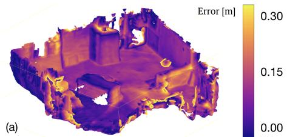
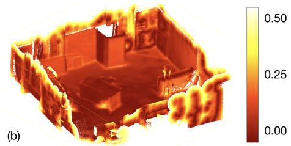
Figure 15. (a) Kimera’s 3D mesh color-coded by the distance to the ground-truth point cloud. (b) Ground-truth point cloud color-coded by the distance to the estimated cloud. EuRoC V1_01 dataset.
Table 3 provides a quantitative comparison between the fast multi-frame mesh produced by Kimera-Mesher and the slow mesh produced via TSDF by Kimera-Semantics. To obtain a complete mesh from Kimera-Mesher we set a large VIO horizon (i.e., we perform full smoothing).
As expected from Figure 15(a), the global mesh from Kimera-Semantics is very accurate, with an average error of 0.35 − 0.48m across datasets. Kimera-Mesher produces a more noisy mesh (up to 24% error increase), but requires two orders of magnitude less time to compute (see Section 4.8).
Table 3. Evaluation of Kimera multi-frame and global meshes’ completeness (Rosinol 2018, Sec. 4.3.3) with an ICP threshold of 1.0m.
| RMSE [m] RelativeImprovement [%]EuRoCMulti-Frame GlobalSeq. | |||
| V1_01 | 0.482 0.364 | 24.00 | |
| V1_02 | 0.374 0.384 | -2.00 | |
| V1_03 | 0.451 | 0.353 | 21.00 |
| V2_01 | 0.465 0.480 | -3.00 | |
| V2_02 | 0.491 | 0.432 | 12.00 |
| V2_03 | 0.530 | 0.411 | 22.00 |
4.3.1 Robustness of Mesh Reconstruction in Dynamic Scenes. Here we show that the the enhanced robustness against dynamic objects afforded by DVIO (and quantified in Section 4.2.1), combined with dynamic masking (Section 3.5), results in robust and accurate metric-semantic meshes in crowded dynamic environments.
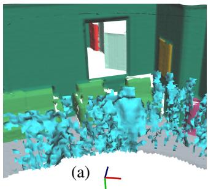
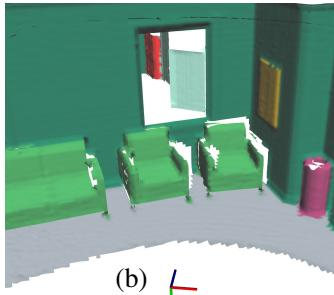
Figure 16. 3D mesh reconstruction (a) without and (b) with dynamic masking. Note that the human moves from right to left, while the robot with the camera rotates back and forth when mapping this scene.
Dynamic Masking. Figure 16 visualizes the effect of dynamic masking on Kimera’s metric-semantic mesh reconstruction. Figure 16(a) shows that without dynamic masking a human walking in front of the camera leaves a “contrail” (in cyan) and creates artifacts in the mesh. Figure 16(b) shows that dynamic masking avoids this issue and leads to clean mesh reconstructions. Table 5 reports the RMSE mesh error (see accuracy metric in (Rosinol et al. 2019)) with and without dynamic masking. To assess the mesh accuracy independently from the VIO localization errors, we also report the mesh geometric errors when using ground-truth poses (“GT pose” column in Table 5) compared to the mesh errors when using VIO poses (“DVIO pose” column). The “GT pose” columns in the table show that even with perfect localization, the artifacts created by dynamic entities (and visualized in Fig. 16(a)) significantly hinder the mesh accuracy, while dynamic masking ensures highly accurate reconstructions. The advantage of dynamic masking is preserved when VIO poses are used. It is worth mentioning that the 3D mesh errors in Table 5 are small compared to the localization errors from Table 1. This is because the floor is the most visible surface in all reconstructions, and since our z-estimate (height) of the trajectory is very accurate, most of the mesh errors are small. We also use ICP to align the ground-truth 3D mesh with the estimated 3D mesh, which further reduces the mesh errors.
4.4 Semantic Reconstruction
Kimera-Semantics builds a 3D mesh from the VIO pose estimates, and uses a combination of dense stereo (or RGB-D if available) and bundled raycasting. We evaluate the impact of each of these components by running three different experiments. For these experiments, we use the simulated dataset in (Rosinol et al. 2020a), which has ground-truth semantics and geometry, and allows us to determine the effects of each module on the performance.
First, we use Kimera-Semantics with ground-truth (GT) poses and ground-truth depth maps (available in simulation) to assess the initial loss of performance due to bundled raycasting. Second, we use Kimera-VIO’s pose estimates.
Finally, we use the full Kimera-Semantics pipeline including dense stereo. To analyze the semantic performance, we calculate the mean Intersection over Union (mIoU) (Hackel et al. 2017), and the overall portion of correctly labeled points (Acc) (Wolf et al. 2015). We also report the ATE to correlate the results with the drift incurred by Kimera-VIO. Finally, we evaluate the metric reconstruction registering the estimated mesh with the ground truth and computing the RMSE for the points as in Section 4.3.
Table 6 summarizes our findings and shows that bundled raycasting results in a small drop in performance both geometrically (< 8cm error on the 3D mesh) as well as semantically (accuracy > 94%). Using Kimera-VIO also results in negligible loss in performance since our VIO has a small drift (< 0.2%, 4cm for a 32m long trajectory). Certainly, the biggest drop in performance is due to the use of dense stereo. Dense stereo (H. Hirschmüller 2008) has difficulties resolving the depth of textureless regions such as walls, which are frequent in simulated scenes.
Figure 17 shows the confusion matrix when running Kimera-Semantics with Kimera-VIO and ground-truth depth (Figure 17(a)), compared with using dense stereo (Figure 17(b)). Large values in the confusion matrix appear between Wall/Shelf and Floor/Wall. This is exactly where dense stereo suffers the most; textureless walls are difficult to reconstruct and are close to shelves and floor, resulting in increased geometric and semantic errors.
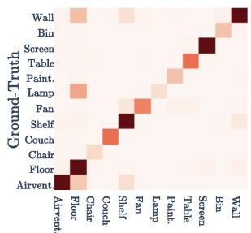
(a) Predicted
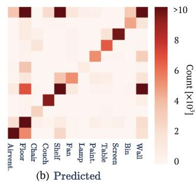
Figure 17. Confusion matrices for Kimera-Semantics using bundled raycasting and (a) ground truth stereo depth or (b) dense stereo (H. Hirschmüller 2008). Both experiments use ground-truth 2D semantics. Values are saturated to 104 for visualization purposes.
4.5 Loop Closure and Mesh Deformation
Localization and geometric evaluation in EuRoC. We evaluate the performance of Kimera-PGMO in terms of the localization errors in Table 4 (last column). We observe that Kimera-PGMO achieves significant improvements on largescale scenes (such as the ‘Neighborhood’ and ‘Subway scenes) where the accumulated ATE is noticeable. Instead, in EuRoC, where DVIO already achieves very accurate localization, Kimera-PGMO may only deliver marginal gains in localization. Note that the localization errors of Kimera-PGMO in Table 4 differ from the ones of Kimera-RPGO in Table 1, because Kimera-RPGO does not optimize the mesh, contrary to Kimera-PGMO.
We evaluate Kimera-PGMO in terms of the geometric errors associated to the deformed 3D mesh in the subset of the EuRoC dataset with ground-truth point clouds. Table 7 shows that Kimera-PGMO’s 3D mesh achieves better geometric accuracy than the unoptimized Kimera-Semantics 3D mesh. For a qualitative visualization of the effects of
Table 4. RMSE for the absolute translation error in meters when using 5-point, 2-point, and DVIO poses, as well as Kimera-RPGO and Kimera-PGMO’s optimized trajectory. We show the drift in % for DVIO to account for the length of the different trajectories.
| Absolute Translation Error [m] (Drift [%]) | |||||||
| Kimera-VIO | Loop Closure | ||||||
| Dataset | Scene | # of Humans | 5-point | 2-point | DVIO | Kimera- RPGO | Kimera- PGMO |
| EuRoC | MH_01 | 0 | 0.09 | 0.14 | 0.11 (0.1) | 0.13 | 0.09 |
| MH_02 | 0 | 0.10 | 0.12 | 0.10 (0.1) | 0.21 | 0.11 | |
| MH_03 | 0 | 0.11 | 0.17 | 0.16 (0.1) | 0.12 | 0.12 | |
| MH_04 | 0 | 0.42 | 0.19 | 0.16 (0.2) | 0.12 | 0.16 | |
| MH_05 | 0 | 0.21 | 0.14 | 0.15 (0.2) | 0.15 | 0.18 | |
| V1_01 | 0 | 0.07 | 0.07 | 0.05 (0.1) | 0.06 | 0.05 | |
| V1_02 | 0 | 0.12 | 0.08 | 0.08 (0.1) | 0.05 | 0.06 | |
| V1_03 | 0 | 0.17 | 0.13 | 0.13 (0.2) | 0.11 | 0.13 | |
| V2_01 | 0 | 0.05 | 0.06 | 0.06 (0.2) | 0.06 | 0.05 | |
| V2_02 | 0 0 | 0.08 0.30 | 0.07 0.27 | 0.07 (0.1) | 0.06 | 0.07 | |
| V2_03 | 0.21 (0.3) | 0.24 | 0.23 | ||||
| uHumans | Office | 12 | 0.92 1.45 | 0.78 | 0.59 (0.2) | 0.68 0.78 | 0.66 |
| 24 60 | 1.60 | 0.79 1.11 | 0.78 (0.4) | 0.72 | 0.78 | ||
| 0.88 (0.4) | 0.61 | ||||||
| uHumans2 | Office | 0 | 0.47 | 0.46 | 0.46 (0.2) | 0.46 | 0.21 |
| 6 | 0.50 | 0.48 | 0.50 (0.2) | 0.49 | 0.47 | ||
| 12 | 0.50 | 0.50 | 0.45 (0.2) | 0.45 | 0.32 | ||
| Neighborhood | 0 | 3.67 | 5.77 | 3.37 (0.8) | 2.78 | 1.70 | |
| 24 | X | X | 6.65 (1.6) | 3.76 | 3.01 | ||
| 36 | X | X | 11.58 (2.7) | 1.74 | 1.48 | ||
| Subway | 0 | 3.38 | 2.65 | 1.79 (0.4) | 1.68 | 1.47 | |
| 24 | X | X | 2.37 (0.5) | 1.92 | 0.82 | ||
| 36 | X | 1.70 | 1.14 (0.2) | 0.87 | 0.68 | ||
| Apartment | 0 | 0.08 | 0.07 | 0.07 (0.1) | 0.07 | 0.08 | |
| 1 | 0.09 | 0.07 | 0.07 (0.1) | 0.07 | 0.07 | ||
| 2 | 0.08 | 0.08 | 0.07 (0.1) | 0.07 | 0.07 | ||
Table 5. 3D Mesh RMSE in meters with and without Dynamic Masking (DM) for Kimera-Semantics when using ground-truth pose (GT pose) and DVIO’s estimated pose (DVIO pose) in the uHumans and uHumans2 datasets. The third column shows the number of humans in each scene (# of Humans).
| Kimera-Semantics 3D mesh RMSE [m] | ||||||
| GT pose | DVIO pose | |||||
| Dataset | Scene | # of Humans | Without DM | With DM | Without DM | With DM |
| uHumans | Office | 12 | 0.09 | 0.06 | 0.23 | 0.23 |
| 24 | 0.13 | 0.06 | 0.35 | 0.30 | ||
| 60 | 0.19 | 0.06 | 0.35 | 0.33 | ||
| uHumans2 | Office | 0 | 0.03 | 0.03 | 0.16 | 0.16 |
| 6 | 0.03 | 0.03 | 0.21 | 0.17 | ||
| 12 | 0.03 | 0.03 | 0.18 | 0.13 | ||
| Neighborhood | 0 | 0.06 | 0.06 | 0.27 | 0.27 | |
| 24 | 0.08 | 0.06 | 0.66 | 0.61 | ||
| 36 | 0.08 | 0.06 | 0.70 | 0.65 | ||
| Subway | 0 | 0.06 | 0.06 | 0.42 | 0.42 | |
| 24 | 0.19 0.19 | 0.06 0.06 | 0.58 0.49 | 0.53 | ||
| 36 | 0.43 | |||||
| Apartment | 0 | 0.05 | 0.05 | 0.06 | 0.06 | |
| 1 | 0.05 | 0.05 | 0.07 | 0.07 | ||
| 2 | 0.05 | 0.05 | 0.07 | 0.07 | ||
Table 6. Evaluation of Kimera-Semantics using the simulated dataset from Rosinol et al. (2020a), which has no humans, using a combination of ground-truth (GT) and dense stereo (Stereo) depth maps, as well as ground-truth (GT) and DVIO (DVIO) poses.
| Kimera-Semantics using: | ||||
| Depth from: Poses from: | GT GT | GT DVIO | Stereo DVIO | |
| Semantic | mIoU [%] | 80.10 | 80.03 | 57.23 |
| Metrics | Acc [%] | 94.68 | 94.50 | 80.74 |
| Geometric | RMSE [m] | 0.079 | 0.131 | 0.215 |
| Localization | ATE [m] | 0.00 | 0.04 | 0.04 |
| Drift [%] | 0.0 | 0.2 | 0.2 | |
Kimera-PGMO, Figure 18 shows the mesh reconstruction before and after deformation.
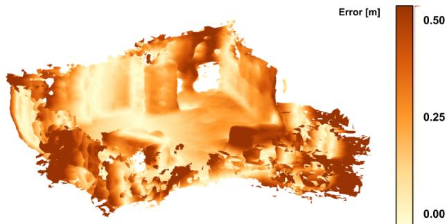
(a) Before deformation with Kimera-PGMO.
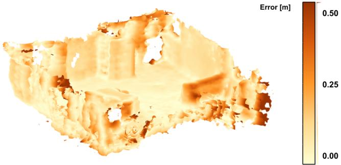
(b) After deformation with Kimera-PGMO.
Figure 18. Reconstruction from EuRoC V1_01 dataset, before and after mesh deformation from Kimera-PGMO. The trajectory RMSE before loop closures are applied is 15 cm and the trajectory RMSE after loop closures are optimized in Kimera-PGMO is 13 cm.
Metric-semantic evaluation in uHumans and uHumans2. We further evaluate the impact that deforming a mesh has on the metric-semantic reconstruction in the uHumans and uHumans2 datasets. Table 7 shows the RMSE of the reconstruction error, along with the percentage of correct semantics matches, for Kimera-PGMO compared to DVIO. We observe that the mesh deformation from Kimera-PGMO achieves the best geometric and semantic performance, compared to the non-optimized 3D mesh from Kimera-Semantics when using the DVIO pose estimates.
4.6 Parsing Humans and Objects
Here we evaluate the accuracy of human tracking and object localization on the uHumans datasets.
Human Nodes. Table 8 shows the average localization error (mismatch between the pelvis estimated position and the ground truth) for each human on the uHumans datasets. Each column adds a feature of the proposed model that improves performance. The first column reports the error of the detections produced by Kolotouros et al. (2019b) (label: “Single Image”). The second column reports the error for the case in which we filter out detections when the human is only partially visible in the camera image, or when the bounding box of the human is too small (≤ 30 pixels, label: “Single Image filtered”). The third column reports errors with the proposed pose graph model discussed in Section 3.5 (label: “Pose-Graph track”) and includes PCM outlier rejection and pose-graph pruning. The fourth column reports errors when the mesh feasibility check for data association is enabled (label: “Mesh Check”), and the fifth reports errors when the beta-parameter data-association technique is also enabled (label: “Beta Check”). The simulator’s humans all have randomized beta parameters within a known range to better approximate the distribution of real human appearance.
The Graph-CNN approach (Kolotouros et al. 2019b) for SMPL detections tends to produce incorrect estimates when the human is occluded. Filtering out these detections improves the localization performance, but occlusions due to objects in the scene still result in significant errors. Adding the mesh-feasibility check decreases error by making data association more effective once detections are registered. The beta-parameter check also significantly decreases error, signifying that data association can be effectively done using SMPL body-parameter estimation.
Only the apartment scene did not follow the trend; results are best without any of the proposed techniques. These are outlier results; the apartment environment had many specular reflections that could have led to false detections.
Object Nodes. Table 8 reports the average localization errors for objects of unknown and known shape detected in the scene. In both cases, we compute the localization error as the distance between the estimated and the ground truth centroid of the object (for the objects with known shape, we use the centroid of the fitted CAD model). We use CAD models for objects classified as “couch”, “chair”, and “car” (which we obtain from Unity’s 3D asset store). In both cases, we can correctly localize the objects, while the availability of a CAD model further boosts accuracy. It is worth noting that most of the known objects in our datasets are visualized early in the runs, when the localization drift is low, making the object localization almost independent from the drift. Finally, we use ICP to align the 3D groundt-truth mesh with the estimated 3D mesh before evaluating the object localization errors.
4.7 Parsing Places and Rooms
We also compute the average precision and recall for the classification of places into rooms. The ground-truth labels are obtained by manually segmenting the places.
For the ‘Office’ (Figure 1) and ‘Subway’ (Figure 24) scenes in uHumans2, we obtain an average precision of 99% and 87%, respectively, and an average recall of 99% and 92%, respectively. Similarly, for the real-life ‘White Owl’ (left DSG in Figure 21) and ‘School’ (Figure 22) scenes, we achieve a precision of 93% and 91%, respectively, and an average recall of 94% and 90%, respectively. In fact, all the rooms in the ‘Office’, ‘Subway’, ‘White Owl’, and ‘School’ scenes are correctly detected and the places are precisely labelled. Incorrect classifications of places typically occur near doors, where room misclassification is inconsequential.
Table 7. 3D mesh RMSE [m] and percentage of correct semantic labels when using Kimera-Semantics and Kimera-PGMO (both using dynamic masking and DVIO poses), in the uHumans and uHumans2 dataset, and the subset of EuRoC datasets having ground-truth point clouds. EuRoC’s ground-truth point clouds do not have semantic labels.
| Geometric Reconstruction [m] | Semantic Reconstruction [%] | |||||
| Dataset | Scene | # of Humans | Kimera-Semantics | Kimera-PGMO | Kimera-Semantics | Kimera-PGMO |
| EuRoC | V1_01 | 0 | 0.15 | 0.13 | ||
| V1_02 | 0 | 0.13 | 0.11 | |||
| V1_03 | 0 | 0.22 | 0.19 | |||
| V2_01 | 0 | 0.23 | 0.19 | |||
| V2_02 | 0 | 0.19 | 0.17 | |||
| V2_03 | 0 | 0.25 | 0.24 | 一 | 一 | |
| uHumans | 12 | 0.23 | 0.20 | 78.5 | 79.1 | |
| Office | 24 | 0.30 | 0.17 | 73.2 | 81.6 | |
| 60 | 0.33 | 0.24 | 70.1 | 72.3 | ||
| uHumans2 | 0 | 0.16 | 0.12 | 72.7 | 78.3 | |
| Office | 6 | 0.17 | 0.10 | 71.3 | 81.5 | |
| 12 | 0.13 | 0.15 | 76.1 | 73.8 | ||
| Neighborhood | 0 | 0.27 | 0.09 | 62.9 | 93.3 | |
| 24 | 0.61 | 0.11 | 51.2 | 93.7 | ||
| 36 | 0.65 | 0.43 | 53.0 | 81.2 | ||
| 0 | 0.42 | 0.26 | 80.1 | 89.3 | ||
| Subway | 24 | 0.53 0.31 | 73.5 | 86.3 | ||
| 36 | 0.43 | 0.39 | 81.3 | 82.8 | ||
| 0 | 0.06 | 0.06 | 65.5 | 65.9 | ||
| Apartment | 1 | 0.08 | 0.08 | 61.1 65.1 | ||
| 2 | 0.08 | 0.08 | 61.1 | 65.3 | ||
Table 8. Human and object localization errors in meters. A dash (–) indicates that the object is not present in the scene. ‘#H column indicates the number of humans in the scene. ‘uH1’ and ‘uH2’ stand for the uHumans and uHumans2 datasets respectively.
| Scene | #H | Localization Errors [m] | |||||||||
| Single | Single Image | Humans Pose Graph | Mesh | Beta | Un- known | Objects Known Obj. | |||||
| Dataset | Image | Filtered | Track. | Check | Check | Obj. | Couch | Chair | Car | ||
| 12 | 2.51 | 1.82 | 1.60 | 1.57 | 1.52 | 1.31 | 0.20 | 0.20 | 一 | ||
| uH1 | Office | 24 | 2.54 | 2.03 | 1.80 | 1.67 | 1.50 | 1.70 | 0.35 | 0.35 | 一 |
| 60 | 2.03 | 1.78 | 1.65 | 1.65 | 1.63 | 1.52 | 0.38 | 0.38 | 一 | ||
| 0 | 1.27 | 0.19 | 0.19 | 一 | |||||||
| uH2 | Office | 6 | 1.87 | 1.21 | 0.86 | 0.82 | 0.63 | 1.05 | 0.17 | 0.18 | 一 |
| 12 | 2.00 | 1.43 | 1.16 | 1.05 | 0.61 | 1.32 | 0.21 | 0.22 | 一 | ||
| 2.89 | 2.23 | ||||||||||
| Neigh- borhood | 0 24 | 21.3 | 2.02 | 1.06 | 1.03 | 0.74 | 3.31 | 一 一 | 一 一 | 3.29 | |
| 36 | 14.0 | 2.50 | 1.44 | 1.14 | 0.55 | 3.56 | 一 | 一 | 3.47 | ||
| 0 | 一 | 3.96 | 2.60 | 一 | 一 | ||||||
| Subway | 24 | 8.34 | 6.56 | 5.53 | 5.31 | 1.92 | 3.76 | 2.70 | 一 | 一 | |
| 36 | 7.61 | 5.80 | 5.20 | 5.12 | 2.83 | 3.10 | 2.30 | 一 | 一 | ||
| 0 | 0.48 | 0.22 | 0.21 | ||||||||
| Apart- ment | 1 | 4.32 | 4.79 | 5.38 | 5.64 | 6.43 | 0.43 | 0.21 | |||
| 2 | 2.52 | 2.66 | 2.69 | 3.79 | 0.45 | 0.21 | 0.21 0.21 | ||||
| 2.83 | |||||||||||
Nevertheless, our approach has difficulties dealing with either complex architectures, such as the ‘Apartment’ in uHumans2 (right DSG in Figure 21), and largely incomplete scenes such as the ‘AeroAstro’ dataset (Figure 23). In particular, for the ‘Apartment’ scene, the presence of exposed ceiling beams distorts the 2D ESDF field in a way that the living room is instead over-segmented as three separated rooms: ‘R1’, ‘R3’, and ‘R6’ should be one room node for the DSG on the right side of Figure 21. The precision and recall for the place segmentation of the ‘Apartment scene is of 68% and 61% respectively. For the ‘AeroAstro scene (Figure 23), the parallel corridor to ‘R1’ is also over-segmented into ‘R3’, ‘R5’, and ‘R2’. In this case, the observed free-space in the corridor narrows significantly between ‘R2’ and ‘R5’, and between ‘R5’ and ‘R3’, as can be seen by the density of nodes in the topological graph (Figure 23). The precision and recall for the place segmentation of the ‘AeroAstro’ scene is of 71% and 67% respectively. Note that with a careful tuning of the parameters for room detection, we can avoid such over-segmentations (Section 3.7). We also discuss the influence of room oversegmentation when performing path-planning queries in Section 6.1.
Finally, we note that DSGs are general enough to handle outdoor scenes, such as the ‘Neighborhood’ scene (Figure 25), while in this case some of the layers (rooms, buildings) are skipped.
4.8 Timing
Figure 19 reports the timing performance of Kimera-Core’s modules. The IMU front-end requires around 40µs for preintegration, hence it can generate state estimates at IMU rate (> 200 Hz). The vision front-end module shows a bimodal distribution since, for every frame, we just perform feature tracking (which takes an average of 7.5 ms), while, at keyframe rate, we perform feature detection, stereo matching, and geometric verification, which, combined, take an average of 51 ms. Kimera-Mesher is capable of generating per-frame 3D meshes in less than 7 ms, while building the multi-frame mesh takes 15 ms on average. The back-end solves the factor-graph optimization in less than 60 ms. Loop-closure detection (LCD) took up to 180 ms to look for loop closure candidates and perform geometric verification and compute the relative transform. Kimera-RPGO, Kimera-PGMO and Kimera-Semantics run on slower threads since their outputs are not required for time-critical actions (e.g., control, obstacle avoidance). Kimera-RPGO took up to 50 ms in our experiments on EuRoC for a pose graph with 734 edges and 728 nodes, but in general its runtime depends on the size of the pose graph. Similarly, Kimera-PGMO took up to 140 ms in our experiments on EuRoC for a pose graph with 14914 edges and 1759 nodes (728 pose nodes and 1031 mesh nodes), but in general its runtime depends on the size of the pose graph, the size of the mesh, and the resolution of the simplified mesh. Finally, Kimera-Semantics (not reported in figure for clarity) takes an average of 0.1s to update the global metric-semantic mesh at each keyframe.
Kimera-DSG’s modules run sequentially once the 3D metric-semantic mesh is built by Kimera-Core. Kimera Objects segments the object instances from the 3D metricsemantic mesh in minutes, depending on the scale of the scene (from 3 min for the ‘White Owl’ scene of ∼ 100m2 to 12 min for the largest ‘Subway’ scene of where the instance segmentation is done sequentially for each object class at a time (which can be parallelized). For the known objects, Kimera-Objects fits a CAD model using TEASER++ which runs in milliseconds (more details about the timing performance of TEASER++ are provided in (Yang et al. 2020)). Kimera-Humans first detects humans using GraphCMR (Kolotouros et al. 2019b) which runs for a single image in ∼ 33 ms on a Nvidia RTX 2080 Ti GPU, and the tracking is performed on the CPU in milliseconds (∼ 10 ms). Kimera-BuildingParser first builds an ESDF out of the TSDF using Voxblox (Oleynikova et al. 2017), which may take several minutes depending on the scale of the scene (∼ 10 min for large scenes such as the ‘Subway’). Then, the topological map is built using (Oleynikova et al. 2018), which also takes several minutes depending on the scale of the scene (∼ 10 min for ‘Subway’). Finally, the detection of rooms, segmentation of places into rooms, and finding the connectivity between rooms, takes a few minutes depending as well on the size of the scene (∼ 2 min for the ‘Subway’ scene). Hence, to build a DSG for a large scale scene such as the ‘Subway’ scene, Kimera-DSG may take approximately ∼ 30 min, with the computation of the ESDF, the topological map, and the object instance segmentation being the most time-consuming operations.
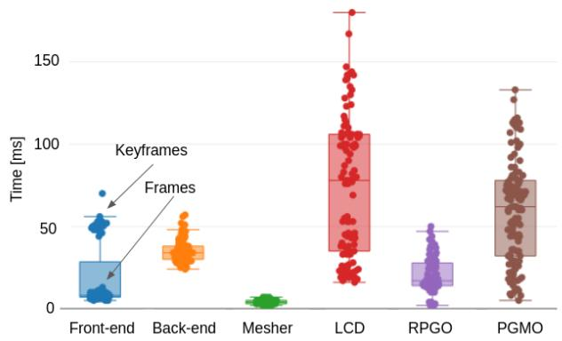
Figure 19. Runtime breakdown for Kimera-VIO, Kimera-Mesher, loop-closure detection (LCD), Kimera-RPGO, and Kimera-PGMO. Note that the timing for Kimera-RPGO and Kimera-PGMO will increase with the size of the pose graph and the mesh. The timing here is collected on the EuRoC V1_01 dataset. The complete run of the dataset consists of 728 poses and 71 loop closures, and the final mesh has 324474 vertices.
4.9 Timing on NVIDIA TX2 Embedded Computer
We also assessed the performance capabilities of Kimera on a common low-SWaP processor for many robotic applications, the Nvidia Jetson TX2. For all benchmarking conducted with the TX2, the MAXN performance mode was used via nvpmodel. We limited our analysis to Kimera-Core. Kimera-VIO was able to achieve real time performance when run against EuRoC with default settings, but we also understand that there may be applications that are more sensitive to latency or processing time. We therefore analyzed the impact of various parameter settings on the runtime of Kimera-VIO.
Two candidate parameters were identified: (i) the maximum number of features tracked (maxFeaturesPerFrame), and (ii) the time horizon for smoothing (horizon). Based on this analysis, we provide two additional sets of parameters in the open-source repository: a fast (250 features maximum and a horizon size of 5 seconds) and a faster (200 features maximum and a horizon size of 4.5 seconds) parameter configuration. The effect of these settings on the processing time of Kimera-VIO is shown in Figure 20. For all configurations, the frontend portion of the module took 10ms on average on non-keyframes. The fast and faster configurations takes about 85% and 75% of the processing time for keyframes, and about 65% and 50% of the processing time for the back-end respectively as compared to the default settings. Note that on more challenging portions of EuRoC, the accuracy of Kimera-VIO degrades under the fast and faster configurations, which may not be desired in all instances. This is most noticeable in the increase in APE for the difficult machine hall sequences of EuRoC, shown in Figure 20.
In addition, we characterized the timing of Kimera-Semantics utilizing the EuRoC dataset again. With the default settings for Kimera-VIO and for Kimera-Semantics, most notably a voxel size of 0.1 meters, we were able to achieve suitable performance for real-time operation. Updates to Kimera-Semantics took 65.8 milliseconds on average across EuRoC. Note that EuRoC data does not include semantic labels, so the voxel size may still need to be tuned to maintain real time performance in other cases.
4.10 Real-Life Experiments
In this section, we qualitatively evaluate Kimera’s ability to generate DSGs from real-life datasets, collected using either our custom-made sensing rig (Figure 13) for the ‘School’ and ‘AeroAstro’ datasets, or Microsoft’s Azure Kinect camera for the ‘White Owl’ dataset, as explained in Section 4.1.
4.10.1 ‘School’ & ‘AeroAstro’. Figure 22 shows the reconstructed DSG by Kimera of the ‘School’ dataset, together with the reconstructed 3D mesh.
We notice that the reconstructed 3D mesh by Kimera-Core is globally consistent, despite being noisy and incomplete due to Intel RealSense D435i’s depth stream quality (see Figure 14). In particular, Kimera-PGMO is capable of leveraging loop closures to simultaneously deform the mesh and optimize the trajectory of the sensor.
Despite the noise and incomplete 3D mesh, Kimera-DSG is able to build a meaningful DSG of the scene. Kimera-Objects correctly detects most of the objects and approximates a conservative bounding box. Nevertheless, some spurious detections are present. For example, the green nodes are supposedly refrigerators in Figure 22, but there are no refrigerators in the ‘School’ dataset. These spurious detections can be easily removed by either fine-tuning the smallest object size valid for a detection, or by re-training Mask-RCNN with the objects in this scene. It is also possible to stop Mask-RCNN from detecting certain object classes that are not present in the scene.
Figure 22 also shows that Kimera correctly reconstructs the place layer, and accurately segments the places into rooms. The room layer accurately represents the layout of the scene, with a corridor (‘R3’) and three rooms (‘R1’, ‘R2’, ‘R4’). The edges between the rooms of the DSG correctly represent the traversability between rooms. The fact that the mesh is noisy and incomplete does not seem to negatively affect the higher levels of abstraction of the DSG.
Figure 23 shows the reconstructed DSG by Kimera of the ‘AeroAstro’ dataset. Similarly to the ‘School’ dataset, Kimera-Core is able to reconstruct a consistent 3D mesh, which remains nonetheless noisy and incomplete since we used the same sensor. While the objects and places layers are correctly estimated, Kimera-BuildingParser oversegments the rooms. In particular, Kimera-BuildingParser over-segments a corridor into three rooms (‘R2’, ‘R3’, ‘R5’). This is because, when traversing the corridor, the sensor was held too close to the wall, thereby limiting the observed free-space. Consequently, the ESDF and the places layer narrow significantly at the locations between rooms ‘R2’ and ‘R5’, and between rooms ‘R5’ and ‘R3’. This narrowing is misinterpreted by Kimera as a separation between rooms, which leads to the over-segmentation of the corridor.
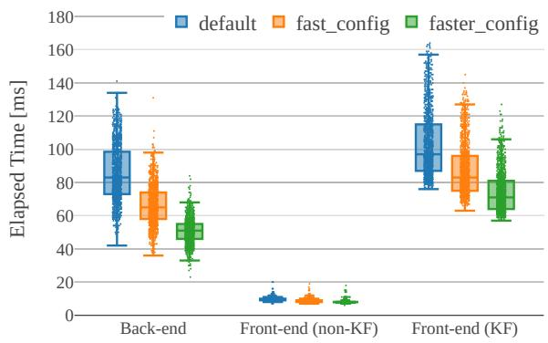
(a) TX2 Runtime breakdown for Kimera-VIO’s back-end and front-end. The front-end’s timing distribution is bi-modal: its runtime is longer on every keyframe (KF) than its per-frame runtime (non-KF).
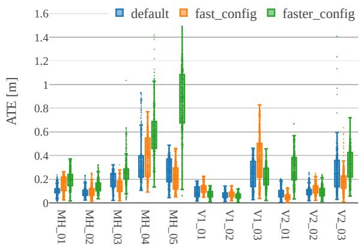
(b) TX2 ATE breakdown for Kimera-VIO
Figure 20. Runtime and ATE for Kimera-VIO for different parameter settings across EuRoC evaluated on the TX2. Labels KF and non-KF denote timing for keyframe insertions in the frontend (involving feature detection and geometric verification through RANSAC) and normal frame insertions (involving feature tracking) respectively. The default, fast, and faster configurations extract a maximum of 300, 250, and 200 features respectively and have a horizon size of 6, 5, and 4.5 seconds respectively
4.10.2 ‘White Owl’. To further assess the performance of Kimera to build a DSG, we use a high-quality depth camera, Microsoft’s Azure Kinect, to reconstruct an accurate and complete 3D mesh of the scene. Figure 21 shows the ‘White Owl’ scene’s DSG (left) next to the simulated ‘Apartment’ scene’s DSG (right), both reconstructed by Kimera. It is remarkable that, independently of the fact that one is a simulated dataset and the other is a real-life dataset, Kimera is capable of reconstructing a globally consistent 3D mesh as well as a coherent DSG for both scenes, while using the same set of parameters.
Furtermore, both reconstructions are qualitatively similar, showing that our simulations are realistic, as can also be seen in Figure 12, and that, given a sufficiently accurate depth sensor, Kimera can achieve accurate reconstructions when using real data.
On the ‘White Owl’ dataset, we still observe nonetheless that there are some spurious object detections (e.g., green nodes). The places and rooms layer of the DSG remain accurate, and correctly represent the scene and the connectivity between layers.
5 Motivating Examples
We highlight the actionable nature of a 3D Dynamic Scene Graph by providing examples of queries it enables.
Obstacle Avoidance and Planning. Agents, objects, and rooms in our DSG have a bounding box attribute. Moreover, the hierarchical nature of the DSG ensures that bounding boxes at higher layers contain bounding boxes at lower layers (e.g., the bounding box of a room contains the objects in that room). This forms a Bounding Volume Hierarchy (BVH) (Larsson and Akenine-Möller 2006), which is extensively used for collision checking in computer graphics. BVHs provide readily available opportunities to speed up obstacle avoidance and motion planning queries where collision checking is often used as a primitive (Karaman and Frazzoli 2011).
Human-Robot Interaction. As already explored in (Armeni et al. 2019; Kim et al. 2019), a scene graph can support user-oriented tasks, such as interactive visualization and Question Answering. Our Dynamic Scene Graph extends the reach of (Armeni et al. 2019; Kim et al. 2019) by (i) allowing visualization of human trajectories and dense poses (see visualization in the video attachment), and (ii) enabling more complex and time-aware queries such as “where was this person at time t?”, or “which object did this person pick in Room A?”. Furthermore, DSGs provide a framework to model plausible interactions between agents and scenes (Zhang et al. 2019b; Hassan et al. 2019; Pirk et al. 2017; Monszpart et al. 2019). We believe DSGs also complement the work on natural language grounding (Kollar et al. 2017), where one of the main concerns is to reason over the variability of human instructions.
Long-term Autonomy. DSGs provide a natural way to “forget” or retain information in long-term autonomy. By construction, higher layers in the DSG are more compact and abstract representations of the scene. Hence, the robot can “forget” portions of the environment that are not frequently observed by simply pruning the corresponding branch of the DSG. For instance, to forget a room in Figure 1, we only need to prune the corresponding node and the connected nodes at lower layers (places, objects, etc.). More importantly, the robot can selectively decide which information to retain: for instance, it can keep all the objects (which are typically fairly cheap to store), but can selectively forget the mesh model, which can be more cumbersome to store in large environments. Finally, DSGs inherit memory advantages afforded by standard scene graphs: if the robot detects N instances of a known object (e.g., a chair), it can simply store a single CAD model and cross-reference it in N nodes of the scene graph; this simple observation enables further data compression.
Prediction. The combination of a dense metric-semantic mesh model and a rich description of the agents allows performing short-term predictions of the scene dynamics and answering queries about possible future outcomes. For instance, one can feed the mesh model to a physics simulator and roll out potential high-level actions of the human agents.
6 Applications
In the remaining, we present two particular applications that we developed, and which we evaluate in Section 6.3.
6.1 Hierarchical Path Planning
The multiple levels of abstraction afforded by a DSG have the potential to enable hierarchical and multi-resolution planning approaches (Schleich et al. 2019; Larsson et al. 2019), where a robot can plan at different levels of abstraction to save computational resources.
In fact, querying paths from one point to another is computationally expensive when using volumetric maps even in small scenes. With DSGs, we can instead compute a path in a hierarchical fashion, which accelerates the path planning query by several orders of magnitude.
To showcase this capability, we first compute a feasible shortest path (using A∗) at the level of buildings. Given the building nodes to traverse, we extract their room layer, and re-plan at the level of rooms. Similarly, given the room nodes to traverse, we further extract the relevant graph of places, and re-plan again at this level. Finally, we extract a smooth collision-free path using the open-source work of (Oleynikova et al. 2016, 2018).
While querying a path at the level of the volumetric ESDF takes minutes, similar queries at higher level of abstractions finish in milliseconds (Section 6.3). Note that, as mentioned in Section 3.7, Kimera may over-segment a room as multiple rooms in the DSG. Nevertheless, since this oversegmentation is typically small (2 or 3 rooms), the runtime of hierarchical path-planning will remain in the order of milliseconds.
6.2 Semantic Path Planning
DSGs also provide a powerful tool for high-level pathplanning queries involving natural language by leveraging the semantic map and the different levels of abstractions.
For instance, the (connected) subgraph of places and objects in a DSG can be used to issue the robot a highlevel command (e.g., object search (Joho et al. 2011)), and the robot can directly infer the closest place in the DSG it has to reach to complete the task, and can plan a feasible path to that place. Instead, the volumetric representation is not amenable to high-level path planning queries, since the operator needs to provide metric coordinates to the robot. With DSGs, the user can use natural language (“reach the cup near the sofa”). In Section 6.3, we showcase examples of semantic queries we give to the robot, and that we use as input for hierarchical path-planning.
6.3 Path Planning Performance on DSGs
Table 9 shows the timing performance of our semantic hierarchical path-planning implementation, where we run at the level of buildings, rooms, and then places, in a hierarchical fashion as described in Section 6.1, and compare its timing performance against running directly on the volumetric ESDF representation. The scalability of our approach is further emphasized by taking the “Office” scene of the uHumans dataset (see Fig. 1a, and floor-plans in Fig. 11) and replicating it in a grid-like pattern to increase its scale (where each new “Office” scene is considered a building). As shown in Table 9, hierarchical path-planning outperforms by several orders of magnitude the timing performance of planning at the volumetric ESDF level, thereby making pathplanning run at interactive speeds for large scale scenes. We also report the length of the estimated trajectories when using the ESDF and when using the hierarchical path-planning approach. We observe in Table 9 that, despite being longer, the trajectories from our hierarchical approach are near as short as the ESDF ones.
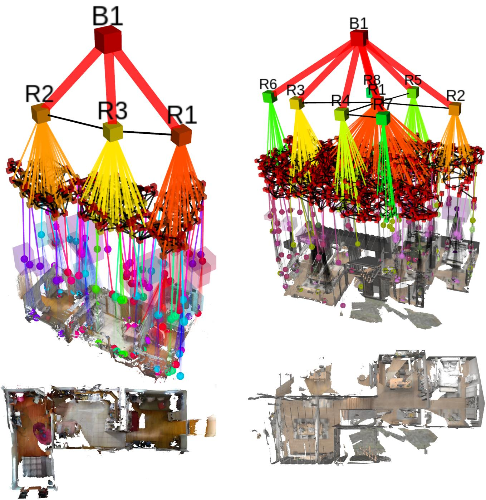
Figure 21. (Left) DSG of the ‘White Owl’ apartment (top left) from collected data using Microsoft’s Azure Kinect sensor, and a top-down view of the reconstructed 3D mesh (bottom left). (Right) DSG of the simulated uHumans2 ‘Apartment’ scene (top right), and a top-down view of the reconstructed 3D mesh (bottom right). Note that despite the data being generated from real-life (left) and simulated (right) sensors, Kimera is capable of reconstructing a globally consistent 3D mesh and a coherent DSG of comparable quality, using the same set of parameters.
Table 9. Hierarchical semantic path-planning using A* at different levels of abstraction. Planning at the level of buildings (B), rooms (R), and then places (P), in a hierarchical fashion, is several orders of magnitude faster than planning at the volumetric level (ESDF). We ‘copy-paste’ the 3D DSG of the office scene from uHumans to form a neighborhood of offices in a grid-like pattern where each office is a building; hence creating a scenario of a much larger scale. We also show the number of nodes and edges in the path, as well as the length of the estimated trajectories for comparison.
| Dataset | Scene | #B | Timing [s] | Nodes [#] / Edges [#] | Path Length [m] | |||||||
| ESDF | Hierarchical Path-Planning | P | R | B | ESDF | Hierar- chical | ||||||
| P | R | B | Total | |||||||||
| uHumans | Office | 1 | 420.4 | 0.339 | 0.001 | 0.000 | 0.340 | 89/ 120 | 16/9 | 1/0 | 54.2 | 56.3 |
| 2 | 944.8 | 0.771 | 0.004 | 0.000 | 0.775 | 178 / 241 | 32 / 19 | 2/1 | 101.2 | 109.8 | ||
| 6 | 21389.2 | 1.231 | 0.012 | 0.001 | 1.244 | 534/730 | 96/ 64 | 6/7 | 311.5 | 329.2 | ||
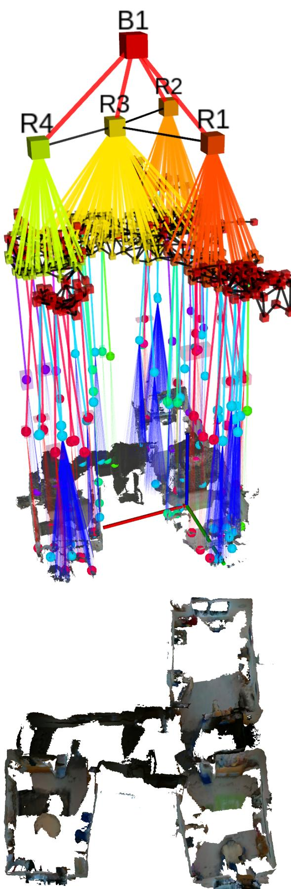
Figure 22. (Top) Real-life DSG for the ‘School’ dataset using a custom-made sensing rig with Intel RealSense D435i sensors (Section 4.1). (Bottom) the globally consistent 3D mesh of the scene reconstructed by Kimera. Despite the noisy and incomplete reconstruction, a DSG correctly abstracts the scene into three rooms and a corridor (‘R3’).
Furthermore, the queries given to our hierarchical path-planning module are of the type: “get near any object x in room y of building where X = {objects in room y of building z}, Y = {rooms in building z}, , with N being the number of buildings in the scene. This is in stark contrast with metric coordinates ; which shows the ability to run semantically meaningful path-planning queries on DSGs.
7 Related Work
We review environment representations used in robotics and computer vision (Section 7.1), and algorithms involved in building these representations (Section 7.2).
7.1 World Representations
Scene Graphs. Scene graphs are popular computer graphics models to describe, manipulate, and render complex scenes and are commonly used in game engines (Wang and Qian 2010).
While in gaming applications, these structures are used to describe 3D environments, scene graphs have been mostly used in computer vision to abstract the content of 2D images. Krishna et al. (2016) use a scene graph to model attributes and relations among objects in 2D images, relying on manually defined natural language captions. Xu et al. (2017) and Li et al. (2017) develop algorithms for 2D scene graph generation. 2D scene graphs have been used for image retrieval (Johnson et al. 2015), captioning (Krause et al. 2017; Anderson et al. 2016; Johnson et al. 2017), highlevel understanding (Choi et al. 2013; Zhao and Zhu 2013a; Huang et al. 2018b; Jiang et al. 2018), visual questionanswering (Fukui et al. 2016; Zhu et al. 2016), and action detection (Lu et al. 2016; Liang et al. 2017; Zhang et al. 2017). Armeni et al. (2019) propose a 3D scene graph model to describe 3D static scenes, and describe a semi-automatic algorithm to build the scene graph. In parallel to (Armeni et al. 2019), Kim et al. (2019) propose a 3D scene graph model for robotics, which however only includes objects as nodes and misses multiple levels of abstraction afforded by (Armeni et al. 2019) and by our proposal.
Representations and Abstractions in Robotics. The question of world modeling and map representations has been central in the robotics community since its inception (Thrun 2003; Cadena et al. 2016). The need to use hierarchical maps that capture rich spatial and semantic information was already recognized in seminal papers by Kuipers, Chatila, and Laumond (Kuipers 2000, 1978; Chatila and Laumond 1985). Vasudevan et al. (2006) propose a hierarchical representation of object constellations. Galindo et al. (2005) use two parallel hierarchical representations (a spatial and a semantic representation) that are then anchored to each other and estimated using 2D lidar data. Ruiz-Sarmiento et al. (2017) extend the framework in (Galindo et al. 2005) to account for uncertain groundings between spatial and semantic elements. Zender et al. (2008) propose a single hierarchical representation that includes a 2D map, a navigation graph and a topological map (Ranganathan and Dellaert 2004; Remolina and Kuipers 2004), which are then further abstracted into a conceptual map. Note that the spatial hierarchies in (Galindo et al. 2005) and (Zender et al. 2008) already resemble a scene graph, with less articulated set of nodes and layers. A more fundamental difference is the fact that early work (i) did not reason over 3D models (but focused on 2D occupancy maps), (ii) did not tackle dynamical scenes, and (iii) did not include dense (e.g., pixel-wise) semantic information, which has been enabled in recent years by deep learning methods.
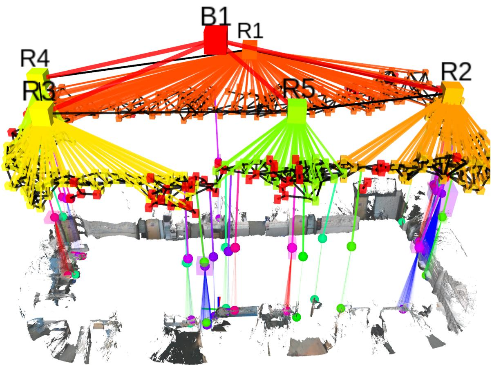
Figure 23. Real-life DSG for the ‘AeroAstro’ dataset using a custom-made sensing rig with Intel RealSense D435i sensors (Section 4.1). The reconstructed 3D mesh by Kimera is globally consistent, with the loop around the office being accurately closed. While the DSG reconstructed by Kimera is coherent, the corridor parallel to ‘R1’ is over-segmented into three rooms (‘R2’, ‘R5’, ‘R3’), see Section 4.10.
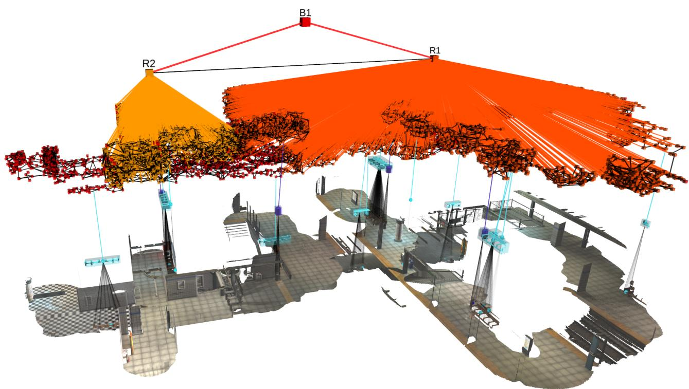
Figure 24. DSG for the subway dataset in uHumans2. The room ‘R2’ belongs to the subway’s lobby (mezzanine), while the room ‘R1’ corresponds to the subway’s platform. The fare collection gates physically separate these two rooms. Segmented benches are shown in cyan, as well as bins in purple.
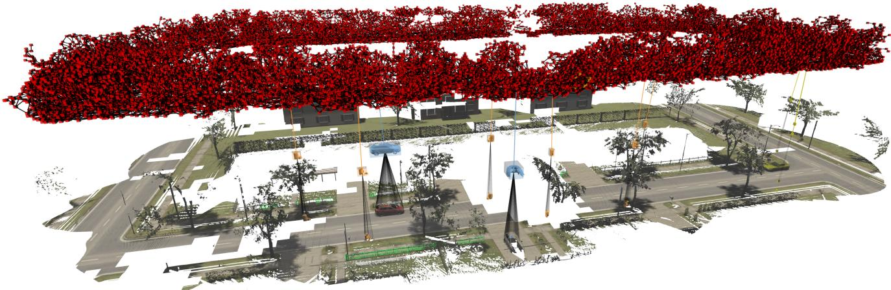
Figure 25. DSG for the neighborhood dataset in uHumans2. Despite not having multiple rooms, a DSG can also be built from outdoor scenes. Segmented cars are shown in blue, as well as bins in orange.
7.2 Perception Algorithms
SLAM and VIO in Dynamic Environments. This paper is also concerned with modeling and gaining robustness against dynamic elements in the scene. SLAM and moving object tracking (sometimes referred to as SLAMMOT (Wang et al. 2007) or as SLAM and Detection And Tracking of Moving Objects, DATMO (Azim and Aycard 2012)) has been extensively investigated in robotics (Wang et al. 2007), while more recent work focuses on joint visual-inertial odometry and target pose estimation (Qiu et al. 2019; Eckenhoff et al. 2019; Geneva et al. 2019). Most of the existing literature in robotics models the dynamic targets as a single 3D point (Chojnacki and Indelman 2018), or with a 3D pose and rely on lidar (Azim and Aycard 2012), RGB-D cameras (Aldoma et al. 2013), monocular cameras (Li et al. 2018b), and visual-inertial sensing (Qiu et al. 2019). Related work also attempts to gain robustness against dynamic scenes by using an IMU (Hwangbo et al. 2009), masking portions of the scene corresponding to dynamic elements (Cui and Ma 2019; Brasch et al. 2018; Bescos et al. 2018), or jointly tracking camera and dynamic objects (Wang et al. 2007; Bescos et al. 2020). To the best of our knowledge, the present paper is the first work that attempts to perform visual-inertial SLAM, segment dense object models, estimate the 3D poses of known objects, and reconstruct and track dense human SMPL meshes.
Metric-Semantic Scene Reconstruction. This line of work is concerned with estimating metric-semantic (but typically non-hierarchical) representations from sensor data. While early work (Bao and Savarese 2011; Brostow et al. 2008) focused on offline processing, recent years have seen a surge of interest towards real-time metric-semantic mapping, triggered by pioneering works such as SLAM++ (Salas-Moreno et al. 2013). Object-based approaches compute an object map and include SLAM++ (Salas-Moreno et al. 2013), XIVO (Dong et al. 2017), OrcVIO (Shan et al. 2019), QuadricSLAM (Nicholson et al. 2018), and (Bowman et al. 2017). For most robotics applications, an objectbased map does not provide enough resolution for navigation and obstacle avoidance. Dense approaches build denser semantically annotated models in the form of point clouds (Behley et al. 2019; Tateno et al. 2015; Dubé et al. 2018; Lianos et al. 2018), meshes (Rosinol et al. 2020a; Rosu et al. 2019), surfels (Whelan et al. 2015; Rünz et al. 2018; Wald et al. 2018), or volumetric models (McCormac et al. 2017; Rosinol et al. 2020a; Grinvald et al. 2019; Narita et al. 2019). Other approaches use both objects and dense models, see Li et al. (2016) and Fusion++ (McCormac et al. 2018). These approaches focus on static environments. Approaches that deal with moving objects, such as DynamicFusion (Newcombe et al. 2015), Mask-fusion (Rünz et al. 2018), Co-fusion (Rünz and Agapito 2017), and MID-Fusion (Xu et al. 2019) are currently limited to small table-top scenes and focus on objects or dense maps, rather than scene graphs. Most of these works rely on GPU processing (McCormac et al. 2017; Zheng et al. 2019; Tateno et al. 2015; Li et al. 2016; McCormac et al. 2018; Rünz et al. 2018; Rünz and Agapito 2017; Xu et al. 2019). Recent work investigates CPU-based approaches in combination with RGB-D sensing, e.g., Wald et al. (2018), PanopticFusion (Narita et al. 2019), and Voxblox++ (Grinvald et al. 2019). A sparser set of contributions addresses other sensing modalities, including monocular cameras (e.g., CNN-SLAM (Tateno et al. 2017), VSO (Lianos et al. 2018), VITAMIN-E (Yokozuka et al.
2019), XIVO (Dong et al. 2017)) and lidar (Behley et al.
2019; Dubé et al. 2018).
Loop Closure with Dense Representations. This line of work is concerned with correcting a dense representation of the environment (e.g., point clouds, meshes, voxels) after a loop closure occurs. LSD-SLAM (Engel et al. 2014) represents the environment with a point cloud; loop closures do not have a direct effect on the point cloud map, but rather correct the pose graph associated to the camera keyframes and the semi-dense local maps attached to each keyframe are updated accordingly. We are especially interested in the cases where the environment is represented as a mesh and the loop closures are enforced by deforming this mesh. Kintinuous (Whelan et al. 2013) accomplishes this in two optimization step: first it optimizes the pose graph and, by utilizing the relationship between the vertices of the mesh and the poses in the pose graph, it then uses the optimized pose graph as measurement constraints in order to deform the mesh with a deformation graph (Sumner et al. 2007). MIS-SLAM (Song et al. 2018) also uses the deformation graph approach to deform the model point cloud using the estimate from ORB-SLAM (Mur-Artal and Tardós 2017). ElasticFusion (Whelan et al. 2015) instead deforms a dense map of surfels and GravityFusion (Puri et al. 2017) builds on top of ElasticFusion by enforcing a consistent gravity direction among all the surfels. Voxgraph (Reijgwart et al. 2020) builds a globally consistent volumetric map by applying graph optimization over a set of submap poses and including odometry and loop closure constraints. Similarly, DynamicFusion (Newcombe et al. 2015), VolumeDeform (Innmann et al. 2016), and Fusion4D (Dou et al. 2016) use a volumetric representation for fusion and deformation. Our approach is the first to simultaneously optimize the pose graph and the mesh, and also the first to formalize this problem as a pose graph optimization.
Metric-to-Topological Scene Parsing. This line of work focuses on partitioning a metric map into semantically meaningful places (e.g., rooms, hallways). Nüchter and Hertzberg (2008) encode relations among planar surfaces (e.g., walls, floor, ceiling) and detect objects in the scene. Blanco et al. (2009); Gomez et al. (2020) propose a hybrid metric-topological map. Friedman et al. (2007) propose Voronoi Random Fields to obtain an abstract model of a 2D grid map. Rogers and Christensen (2012) and Lin et al. (2013) leverage objects to perform a joint object-and-place classification. While Nie et al. (2020); Huang et al. (2018a); Zhao and Zhu (2013b) jointly solve the problem of scene understanding and reconstruction. Pangercic et al. (2012) reason on the objects’ functionality. Pronobis and Jensfelt (2012) use a Markov Random Field to segment a 2D grid map. Zheng et al. (2018) infer the topology of a grid map using a Graph-Structured Sum-Product Network, while Zheng and Pronobis (2019) use a neural network. Armeni et al. (2016) focus on a 3D mesh, and propose a method to parse a building into rooms. Floor plan estimation has been also investigated using single images (Hedau et al. 2009; Schwing et al. 2013), omnidirectional images (Lukierski et al. 2017), 2D lidar (Li and Stevenson 2020; Turner and Zakhor 2014), 3D lidar (Mura et al. 2014; Ochmann et al. 2014), RGB-D (Liu et al. 2018), or from crowd-sourced mobile-phone trajectories (Alzantot and Youssef 2012). The works (Armeni et al. 2016; Mura et al. 2014; Ochmann et al.
2014) are closest to our proposal, but contrarily to (Armeni et al. 2016) we do not rely on a Manhattan World assumption, and contrarily to (Mura et al. 2014; Ochmann et al. 2014) we operate on a mesh model. Recently, Wald et al. (2020) propose to learn from point clouds a 3D semantic scene graph that focuses on representing semantically meaningful inter-instance relationships.
Human Pose Estimation and Tracking. Human pose and shape estimation from a single image is a growing research area. While we refer the reader to (Kolotouros et al. 2019b; Kolotouros et al. 2019; Kolotouros et al. 2019a; Kocabas et al. 2020) for a broader review, it is worth mentioning that related work includes optimization-based approaches, which fit a 3D mesh to 2D image keypoints (Bogo et al. 2016; Lassner et al. 2017; Zanfir et al. 2018; Kolotouros et al. 2019; Yang and Carlone 2020), and learning-based methods, which infer the mesh directly from pixel information (Tan et al. 2017; Kanazawa et al. 2018; Omran et al. 2018; Pavlakos et al. 2018; Kolotouros et al. 2019b; Kolotouros et al. 2019). Human models are typically parametrized using the Skinned Multi-Person Linear Model (SMPL) (Loper et al. 2015), which provides a compact pose and shape description and can be rendered as a mesh with 6890 vertices and 23 joints. The common approach to monocular human tracking is to predict joints probabilities in 2D image space and which are optimized to 3D joints based on multiple timeseries observations and motion priors (Andriluka et al. 2010; Andriluka et al. 2008; Arnab et al. 2019; Bridgeman et al. 2019; Elhayek et al. 2012; Zhou et al. 2018b; Wang et al. 2020). Taylor et al. (2010) combines a learned motion model with particle filtering to predict 3D human poses. In this work, we aim to not only estimate the 3D pose of the human, but also the full SMPL shape without maintaining the persistent image history required by many of the approaches above. In human tracking literature, only Arnab et al. (2019) fully reconstruct the SMPL shape of the human; however, they reconstruct the shape after performing data association over multiple timesteps. In contrast, we use the method of Kolotouros et al. (2019b) to directly get the full 3D pose of the human at each timestep, simplifying pose estimation, and allowing us to do data association based on the SMPL body shape.
8 Conclusion
We introduced 3D Dynamic Scene Graphs, a unified representation for actionable spatial perception. Moreover, we presented Kimera, the first Spatial Perception Engine that builds a DSG from visual-inertial data in a fully automatic fashion. We showcased Kimera in photo-realistic simulations and real data, and discussed applications enabled by the proposed DSG representation, including semantic and hierarchical path planning.
This paper opens several research avenues. First of all, it would be desirable to develop spatial perception engines that run incrementally and in real time. Currently, while the creation of the metric-semantic reconstruction happens in real-time, the rest of the scene graph is built at the end of the run and requires few minutes to parse the entire scene. Second, it would be interesting to design engines that estimate a DSG from heterogeneous sensors and from sensor data collected by multiple robots. Finally, a natural direction is to enrich a DSG with other physical attributes, including material type and affordances for objects, and trying to learn attributes and relations from data.
Acknowledgments
We are thankful to Dan Griffith, Ben Smith, Arjun Majumdar, and Zac Ravichandran for open-sourcing the TESSE simulator, and to Winter Guerra and Varun Murali for the discussions about Unity.
Disclaimer
DISTRIBUTION STATEMENT A. Approved for public release. Distribution is unlimited.
This material is based upon work supported by the Under Secretary of Defense for Research and Engineering under Air Force Contract No. FA8702-15-D-0001. Any opinions, findings, conclusions or recommendations expressed in this material are those of the author(s) and do not necessarily reflect the views of the Under Secretary of Defense for Research and Engineering.
References
Abdulla W (2017) Mask R-CNN for object detection and instance segmentation on keras and tensorflow. https://github. com/matterport/Mask_RCNN.
Aldoma A, Tombari F, Prankl J, Richtsfeld A, Di Stefano L and Vincze M (2013) Multimodal cue integration through hypotheses verification for RGB-D object recognition and 6DOF pose estimation. In: IEEE Intl. Conf. on Robotics and Automation (ICRA). pp. 2104–2111.
Alzantot M and Youssef M (2012) CrowdInside: Automatic Construction of Indoor Floorplans. In: Proc. of the 20th International Conference on Advances in Geographic Information Systems. pp. 99–108.
Anderson P, Fernando B, Johnson M and Gould S (2016) Spice: Semantic propositional image caption evaluation. In: European Conf. on Computer Vision (ECCV). pp. 382–398.
Andriluka M, Roth S and Schiele B (2008) People-tracking-bydetection and people-detection-by-tracking. In: IEEE Conf. on Computer Vision and Pattern Recognition (CVPR). pp. 1–8.
Andriluka M, Roth S and Schiele B (2010) Monocular 3D pose estimation and tracking by detection. In: IEEE Conf. on Computer Vision and Pattern Recognition (CVPR). pp. 623– 630.
Armeni I, He Z, Gwak J, Zamir A, Fischer M, Malik J and Savarese S (2019) 3D scene graph: A structure for unified semantics, 3D space, and camera. In: Intl. Conf. on Computer Vision (ICCV). pp. 5664–5673.
Armeni I, Sener O, Zamir A, Jiang H, Brilakis I, Fischer M and Savarese S (2016) 3d semantic parsing of large-scale indoor spaces. In: IEEE Conf. on Computer Vision and Pattern Recognition (CVPR). pp. 1534–1543.
Arnab A, Doersch C and Zisserman A (2019) Exploiting temporal context for 3D human pose estimation in the wild. In: Proceedings of the IEEE Conference on Computer Vision and Pattern Recognition. pp. 3395–3404.
Azim A and Aycard O (2012) Detection, classification and tracking of moving objects in a 3d environment. In: 2012 IEEE Intelligent Vehicles Symposium. pp. 802–807.
Badrinarayanan V, Kendall A and Cipolla R (2017) SegNet: A deep convolutional encoder-decoder architecture for image segmentation. IEEE Trans. Pattern Anal. Machine Intell. .
Bao SYZ and Savarese S (2011) Semantic structure from motion. In: IEEE Conf. on Computer Vision and Pattern Recognition (CVPR).
Behley J, Garbade M, Milioto A, Quenzel J, Behnke S, Stachniss C and Gall J (2019) SemanticKITTI: A Dataset for Semantic Scene Understanding of LiDAR Sequences. In: Intl. Conf. on Computer Vision (ICCV).
Bescos B, Campos C, Tardós JD and Neira J (2020) DynaSLAM II: Tightly-coupled multi-object tracking and SLAM. arXiv preprint arXiv:2010.07820 .
Bescos B, Fácil JM, Civera J and Neira J (2018) DynaSLAM: Tracking, mapping, and inpainting in dynamic scenes. IEEE Robotics and Automation Letters 3(4): 4076–4083.
Besl PJ and McKay ND (1992) A method for registration of 3-D shapes. IEEE Trans. Pattern Anal. Machine Intell. 14(2).
Blanco JL, González J and Fernández-Madrigal JA (2009) Subjective local maps for hybrid metric-topological SLAM. Robotics and Autonomous Systems 57: 64–74.
Bloesch M, Omari S, Hutter M and Siegwart R (2015) Robust visual inertial odometry using a direct EKF-based approach. In: IEEE/RSJ Intl. Conf. on Intelligent Robots and Systems (IROS). IEEE.
Bogo F, Kanazawa A, Lassner C, Gehler P, Romero J and Black MJ (2016) Keep it SMPL: Automatic estimation of 3d human pose and shape from a single image. In: Leibe B, Matas J, Sebe N and Welling M (eds.) European Conf. on Computer Vision (ECCV).
Bouguet J (2000) Pyramidal implementation of the Lucas Kanade feature tracker.
Bowman S, Atanasov N, Daniilidis K and Pappas G (2017) Probabilistic data association for semantic SLAM. In: IEEE Intl. Conf. on Robotics and Automation (ICRA). pp. 1722– 1729.
Brasch N, Bozic A, Lallemand J and Tombari F (2018) Semantic monocular SLAM for highly dynamic environments. In: IEEE/RSJ Intl. Conf. on Intelligent Robots and Systems (IROS). pp. 393–400.
Briales J and Gonzalez-Jimenez J (2017) Cartan-sync: Fast and global SE(d)-synchronization. IEEE Robot. Autom. Lett 2(4): 2127–2134.
Bridgeman L, Volino M, Guillemaut JY and Hilton A (2019) Multi-person 3D pose estimation and tracking in sports. In: Proceedings of the IEEE Conference on Computer Vision and Pattern Recognition Workshops. pp. 0–0.
Brostow GJ, Shotton J, Fauqueur J and Cipolla R (2008) Segmentation and recognition using structure from motion point clouds. In: European Conf. on Computer Vision (ECCV). pp. 44–57.
Burri M, Nikolic J, Gohl P, Schneider T, Rehder J, Omari S, Achtelik M and Siegwart R (2016) The EuRoC micro aerial vehicle datasets. Intl. J. of Robotics Research .
Cadena C, Carlone L, Carrillo H, Latif Y, Scaramuzza D, Neira J, Reid I and Leonard J (2016) Past, present, and future of simultaneous localization and mapping: Toward the robustperception age. IEEE Trans. Robotics 32(6): 1309–1332. DOI: 10.1109/TRO.2016.2624754. Arxiv preprint: 1606.05830, (pdf).
Campos C, Elvira R, Rodríguez JJG, Montiel JM and Tardós JD (2021) ORB-SLAM3: An accurate open-source library for
visual, visual–inertial, and multimap SLAM. IEEE Trans. Robotics .
Carlone L, Kira Z, Beall C, Indelman V and Dellaert F (2014) Eliminating conditionally independent sets in factor graphs: A unifying perspective based on smart factors. In: IEEE Intl. Conf. on Robotics and Automation (ICRA). pp. 4290–4297.
Chatila R and Laumond JP (1985) Position referencing and consistent world modeling for mobile robots. In: IEEE Intl. Conf. on Robotics and Automation (ICRA). pp. 138–145.
Chen LC, Papandreou G, Kokkinos I, Murphy K and Yuille AL (2017) DeepLab: Semantic image segmentation with deep convolutional nets, atrous convolution, and fully connected crfs. IEEE Trans. Pattern Anal. Machine Intell. 40(4): 834– 848.
Choi W, Chao Y, Pantofaru C and Savarese S (2013) Understanding indoor scenes using 3d geometric phrases. In: IEEE Conf. on Computer Vision and Pattern Recognition (CVPR). pp. 33–40.
Chojnacki M and Indelman V (2018) Vision-based dynamic target trajectory and ego-motion estimation using incremental light bundle adjustment. International Journal of Micro Air Vehicles 10(2): 157–170.
Cloudcompareorg (2019) CloudCompare - open source project. https://www.cloudcompare.org.
Cui L and Ma C (2019) SOF-SLAM: A semantic visual SLAM for dynamic environments. IEEE Access 7: 166528–166539.
Dai A, Nießner M, Zollhöfer M, Izadi S and Theobalt C (2017) Bundlefusion: Real-time globally consistent 3d reconstruction using on-the-fly surface reintegration. ACM Transactions on Graphics (ToG) 36(4): 1.
Davison AJ (2018) FutureMapping: The computational structure of spatial AI systems. arXiv preprint arXiv:1803.11288 .
Dellaert F (2012) Factor graphs and GTSAM: A hands-on introduction. Technical Report GT-RIM-CP&R-2012-002, Georgia Institute of Technology.
Dellaert F and Kaess M (2017) Factor graphs for robot perception. Foundations and Trends in Robotics 6(1-2): 1–139.
Delmerico J and Scaramuzza D (2018) A benchmark comparison of monocular visual-inertial odometry algorithms for flying robots. In: 2018 IEEE International Conference on Robotics and Automation (ICRA). IEEE, pp. 2502–2509.
Dong J, Fei X and Soatto S (2017) Visual-Inertial-Semantic scene representation for 3D object detection. In: IEEE Conf. on Computer Vision and Pattern Recognition (CVPR).
Dou M, Khamis S, Degtyarev Y, Davidson P, Fanello SR, Kowdle A, Escolano SO, Rhemann C, Kim D, Taylor J, Kohli P, Tankovich V and Izadi S (2016) Fusion4D: Real-time performance capture of challenging scenes. ACM Trans. Graph. 35(4). DOI:10.1145/2897824.2925969. URL https: //doi.org/10.1145/2897824.2925969.
Dubé R, Cramariuc A, Dugas D, Nieto J, Siegwart R and Cadena C (2018) SegMap: 3d segment mapping using data-driven descriptors. In: Robotics: Science and Systems (RSS).
Eckenhoff K, Yang Y, Geneva P and Huang G (2019) Tightlycoupled visual-inertial localization and 3D rigid-body target tracking. IEEE Robotics and Automation Letters 4(2): 1541– 1548.
Elhayek A, Stoll C, Hasler N, Kim KI, Seidel HP and Theobalt C (2012) Spatio-temporal motion tracking with unsynchronized cameras. In: 2012 IEEE Conference on Computer Vision and Pattern Recognition. IEEE, pp. 1870–1877.
Engel J, Schöps T and Cremers D (2014) LSD-SLAM: Large-scale direct monocular SLAM : 834–849.
Enqvist O, Kahl F and Olsson C (2011) Non-sequential structure from motion. In: Intl. Conf. on Computer Vision (ICCV). pp. 264–271.
Everett M, Chen YF and How J (2018) Motion planning among dynamic, decision-making agents with deep reinforcement learning.
Forster C, Carlone L, Dellaert F and Scaramuzza D (2015) IMU preintegration on manifold for efficient visual-inertial maximum-a-posteriori estimation. In: Robotics: Science and Systems (RSS). Accepted as oral presentation (acceptance rate 4%) (pdf) (video) (supplemental material: (pdf)).
Forster C, Carlone L, Dellaert F and Scaramuzza D (2017) Onmanifold preintegration for real-time visual-inertial odometry. IEEE Trans. Robotics 33(1): 1–21. Arxiv preprint: 1512.02363, (pdf), technical report GT-IRIM-CP&R-2015-001.
Forster C, Pizzoli M and Scaramuzza D (2014) SVO: Fast Semi-Direct Monocular Visual Odometry. In: IEEE Intl. Conf. on Robotics and Automation (ICRA). DOI:10.1109/ICRA.2014. 6906584.
Friedman S, Pasula H and Fox D (2007) Voronoi random fields: Extracting the topological structure of indoor environments via place labeling. In: Intl. Joint Conf. on AI (IJCAI). San Francisco, CA, USA: Morgan Kaufmann Publishers Inc., p. 2109–2114.
Fukui A, Park D, Yang D, Rohrbach A, Darrell T and Rohrbach M (2016) Multimodal compact bilinear pooling for visual question answering and visual grounding. In: Proceedings of the 2016 Conference on Empirical Methods in Natural Language Processing. Austin, Texas: Association for Computational Linguistics, pp. 457–468. DOI:10.18653/v1/ D16-1044.
Furgale P, Rehder J and Siegwart R (2013) Unified temporal and spatial calibration for multi-sensor systems. In: IEEE/RSJ Intl. Conf. on Intelligent Robots and Systems (IROS).
Galindo C, Saffiotti A, Coradeschi S, Buschka P, Fernández-Madrigal J and González J (2005) Multi-hierarchical semantic maps for mobile robotics. In: IEEE/RSJ Intl. Conf. on Intelligent Robots and Systems (IROS). pp. 3492–3497.
Gálvez-López D and Tardós JD (2012) Bags of binary words for fast place recognition in image sequences. IEEE Transactions on Robotics 28(5): 1188–1197. DOI:10.1109/TRO.2012. 2197158.
Garcia-Garcia A, Orts-Escolano S, Oprea S, Villena-Martinez V and García-Rodríguez J (2017) A review on deep learning techniques applied to semantic segmentation. ArXiv Preprint: 1704.06857 .
Geneva P, Maley J and Huang G (2019) Schmidt-EKF-based visualinertial moving object tracking. ArXiv Preprint: 1903.0863 .
Gomez C, Fehr M, Millane A, Hernandez AC, Nieto J, Barber R and Siegwart R (2020) Hybrid topological and 3D dense mapping through autonomous exploration for large indoor environments. In: 2020 IEEE International Conference on Robotics and Automation (ICRA). IEEE, pp. 9673–9679.
Grinvald M, Furrer F, Novkovic T, Chung JJ, Cadena C, Siegwart R and Nieto J (2019) Volumetric Instance-Aware Semantic Mapping and 3D Object Discovery. IEEE Robotics and Automation Letters 4(3): 3037–3044.
Grupp M (2017) evo: Python package for the evaluation of odometry and SLAM. https://github.com/ MichaelGrupp/evo.
Guerra W, Tal E, Murali V, Ryou G and Karaman S (2019) FlightGoggles: Photorealistic sensor simulation for perceptiondriven robotics using photogrammetry and virtual reality. In: arXiv preprint: 1905.11377.
H Hirschmüller H (2008) Stereo processing by semiglobal matching and mutual information. IEEE Trans. Pattern Anal. Machine Intell. 30(2): 328–341.
Hackel T, Savinov N, Ladicky L, Wegner JD, Schindler K and Pollefeys M (2017) Semantic3d.net: A new largescale point cloud classification benchmark. arXiv preprint arXiv:1704.03847 .
Hartley RI and Zisserman A (2004) Multiple View Geometry in Computer Vision. Second edition. Cambridge University Press.
Hassan M, Choutas V, Tzionas D and Black MJ (2019) Resolving 3D human pose ambiguities with 3D scene constraints. In: Proceedings of the IEEE International Conference on Computer Vision. pp. 2282–2292.
He K, Gkioxari G, Dollár P and Girshick R (2017) Mask R-CNN. In: Intl. Conf. on Computer Vision (ICCV). pp. 2980–2988.
Hedau V, Hoiem D and Forsyth D (2009) Recovering the spatial layout of cluttered rooms. In: IEEE Conf. on Computer Vision and Pattern Recognition (CVPR). pp. 1849–1856.
Horn BKP (1987) Closed-form solution of absolute orientation using unit quaternions. J. Opt. Soc. Amer. 4(4): 629–642.
Hu R, Dollar P and He K (2017) Learning to segment every thing. In: Intl. Conf. on Computer Vision (ICCV). pp. 4233–4241.
Hu S and Carlone L (2019) Accelerated inference in Markov Random Fields via smooth Riemannian optimization. IEEE Robotics and Automation Letters (RA-L) Extended ArXiv version: (pdf).
Huang S, Qi S, Xiao Y, Zhu Y, Wu Y and Zhu S (2018a) Cooperative holistic scene understanding: Unifying 3d object, layout, and camera pose estimation. In: Advances in Neural Information Processing Systems. pp. 207–218.
Huang S, Qi S, Zhu Y, Xiao X, Xu Y and Zhu S (2018b) Holistic 3D scene parsing and reconstruction from a single rgb image. In: European Conf. on Computer Vision (ECCV). pp. 187–203.
Hwangbo M, Kim J and Kanade T (2009) Inertial-aided klt feature tracking for a moving camera. In: IEEE/RSJ Intl. Conf. on Intelligent Robots and Systems (IROS). pp. 1909–1916.
Innmann M, Zollhöfer M, Nießner M, Theobalt C and Stamminger M (2016) VolumeDeform: Real-time volumetric non-rigid reconstruction. ArXiv abs/1603.08161.
Jiang C, Qi S, Zhu Y, Huang S, Lin J, Yu L, Terzopoulos D and Zhu S (2018) Configurable 3D scene synthesis and 2D image rendering with per-pixel ground truth using stochastic grammars. Intl. J. of Computer Vision 126(9): 920–941.
Johnson J, Hariharan B, van der Maaten L, Fei-Fei L, Zitnick L and Girshick R (2017) Clevr: A diagnostic dataset for compositional language and elementary visual reasoning. In: IEEE Conf. on Computer Vision and Pattern Recognition (CVPR). pp. 2901–2910.
Johnson J, Krishna R, Stark M, Li L, Shamma D, Bernstein M and Fei-Fei L (2015) Image retrieval using scene graphs. In: IEEE Conf. on Computer Vision and Pattern Recognition (CVPR). pp. 3668–3678.
Joho D, Senk M and Burgard W (2011) Learning search heuristics for finding objects in structured environments. Robotics and Autonomous Systems 59(5): 319–328.
Kaess M, Johannsson H, Roberts R, Ila V, Leonard J and Dellaert F (2012) iSAM2: Incremental smoothing and mapping using the Bayes tree. Intl. J. ofRobotics Research 31: 217–236.
Kanazawa A, Black MJ, Jacobs DW and Malik J (2018) End-toend recovery of human shape and pose. In: IEEE Conf. on Computer Vision and Pattern Recognition (CVPR).
Karaman S and Frazzoli E (2011) Sampling-based algorithms for optimal motion planning. Intl. J. of Robotics Research 30(7): 846–894.
Kim U, Park J, Song T and Kim J (2019) 3-D scene graph: A sparse and semantic representation of physical environments for intelligent agents. IEEE Trans. Cybern. PP: 1–13.
Kirillov A, He K, Girshick R, Rother C and Dollar P (2019) Panoptic segmentation. In: The IEEE Conference on Computer Vision and Pattern Recognition (CVPR).
Kneip L, Chli M and Siegwart R (2011) Robust real-time visual odometry with a single camera and an IMU. In: British Machine Vision Conf. (BMVC). pp. 16.1–16.11.
Kocabas M, Athanasiou N and Black MJ (2020) Vibe: Video inference for human body pose and shape estimation. In: Proceedings of the IEEE/CVF Conference on Computer Vision and Pattern Recognition. pp. 5253–5263.
Kollar T, Tellex S, Walter M, Huang A, Bachrach A, Hemachandra S, Brunskill E, Banerjee A, Roy D, Teller S and Roy N (2017) Generalized grounding graphs: A probabilistic framework for understanding grounded commands. ArXiv Preprint: 1712.01097 .
Kolotouros N, Pavlakos G, Black MJ and Daniilidis K (2019) Learning to Reconstruct 3D Human Pose and Shape via Modelfitting in the Loop. arXiv e-prints : arXiv:1909.12828.
Kolotouros N, Pavlakos G, Black MJ and Daniilidis K (2019a) Learning to reconstruct 3D human pose and shape via modelfitting in the loop. In: Proceedings of the IEEE International Conference on Computer Vision. pp. 2252–2261.
Kolotouros N, Pavlakos G and Daniilidis K (2019b) Convolutional mesh regression for single-image human shape reconstruction. In: IEEE Conf. on Computer Vision and Pattern Recognition (CVPR).
Krause J, Johnson J, R Krishna R and Fei-Fei L (2017) A hierarchical approach for generating descriptive image paragraphs. In: IEEE Conf. on Computer Vision and Pattern Recognition (CVPR). pp. 3337–3345.
Krishna R, Zhu Y, Groth O, Johnson J, Hata K, Kravitz J, Chen S, Kalantidis Y, Li L, Shamma D, Bernstein M and Fei-Fei L (2016) Visual Genome: Connecting language and vision using crowdsourced dense image annotations. arXiv preprints arXiv:1602.07332 .
Krishna S (1992) Introduction to Database and Knowledge-Base Systems. World Scientific Publishing Co., Inc. ISBN 9810206194.
Krizhevsky A, Sutskever I and Hinton GE (2012) ImageNet classification with deep convolutional neural networks. In: Advances in Neural Information Processing Systems (NIPS), NIPS’12. pp. 1097–1105.
Kuipers B (1978) Modeling spatial knowledge. Cognitive Science 2: 129–153.
Kuipers B (2000) The Spatial Semantic Hierarchy. Artificial Intelligence 119: 191–233.
Lang H, Yuhui Y, Jianyuan G, Chao Z, Xilin C and Jingdong W (2019) Interlaced sparse self-attention for semantic segmentation. arXiv preprint arXiv:1907.12273 .
Larsson DT, Maity D and Tsiotras P (2019) Q-Search trees: An information-theoretic approach towards hierarchical abstractions for agents with computational limitations.
Larsson T and Akenine-Möller T (2006) A dynamic bounding volume hierarchy for generalized collision detection. Comput. Graph. 30(3): 450–459.
Lassner C, Romero J, Kiefel M, Bogo F, Black MJ and Gehler PV (2017) Unite the people: Closing the loop between 3D and 2D human representations. In: IEEE Conf. on Computer Vision and Pattern Recognition (CVPR).
Leutenegger S, Furgale P, Rabaud V, Chli M, Konolige K and Siegwart R (2013) Keyframe-based visual-inertial slam using nonlinear optimization. In: Robotics: Science and Systems (RSS).
Li C, Xiao H, Tateno K, Tombari F, Navab N and Hager GD (2016) Incremental scene understanding on dense SLAM. In: IEEE/RSJ Intl. Conf. on Intelligent Robots and Systems (IROS). pp. 574–581.
Li J, Raventos A, Bhargava A, Tagawa T and Gaidon A (2018a) Learning to fuse things and stuff. ArXiv abs/1812.01192.
Li J and Stevenson R (2020) Indoor layout estimation by 2d lidar and camera fusion. ArXiv preprint arXiv:2001.05422.
Li P, Qin T and Shen S (2018b) Stereo vision-based semantic 3D object and ego-motion tracking for autonomous driving. In: Ferrari V, Hebert M, Sminchisescu C and Weiss Y (eds.) European Conf. on Computer Vision (ECCV). pp. 664–679.
Li Y, Ouyang W, Zhou B, Wang K and Wang X (2017) Scene graph generation from objects, phrases and region captions. In: International Conference on Computer Vision (ICCV).
Liang X, Lee L and Xing E (2017) Deep variation structured reinforcement learning for visual relationship and attribute detection. In: IEEE Conf. on Computer Vision and Pattern Recognition (CVPR). pp. 4408–4417.
Lianos K, Schönberger J, Pollefeys M and Sattler T (2018) Vso: Visual semantic odometry. In: European Conf. on Computer Vision (ECCV). pp. 246–263.
Lin D, Fidler S and Urtasun R (2013) Holistic scene understanding for 3d object detection with rgbd cameras. DOI:10.1109/ICCV. 2013.179.
Liu C, Wu J and Furukawa Y (2018) FloorNet: A unified framework for floorplan reconstruction from 3D scans. In: European Conf. on Computer Vision (ECCV). pp. 203–219.
Loper M, Mahmood N, Romero J, Pons-Moll G and Black MJ (2015) SMPL: A skinned multi-person linear model. ACM Trans. Graphics (Proc. SIGGRAPHAsia) 34(6): 248:1–248:16.
Lorensen W and Cline H (1987) Marching cubes: A high resolution 3d surface construction algorithm. In: SIGGRAPH. pp. 163– 169.
Lu C, Krishna R, Bernstein M and Li FF (2016) Visual relationship detection with language priors. In: European Conference on Computer Vision. pp. 852–869.
Lukierski R, Leutenegger S and Davison AJ (2017) Room layout estimation from rapid omnidirectional exploration. In: IEEE Intl. Conf. on Robotics and Automation (ICRA). pp. 6315– 6322.
Mangelson JG, Dominic D, Eustice RM and Vasudevan R (2018) Pairwise consistent measurement set maximization for robust multi-robot map merging. In: IEEE Intl. Conf. on Robotics and Automation (ICRA). pp. 2916–2923.
McCormac J, Clark R, Bloesch M, Davison A and Leutenegger S (2018) Fusion++: Volumetric object-level SLAM. In: Intl. Conf. on 3D Vision (3DV). pp. 32–41.
McCormac J, Handa A, Davison AJ and Leutenegger S (2017) SemanticFusion: Dense 3D Semantic Mapping with Convolutional Neural Networks. In: IEEE Intl. Conf. on
Robotics and Automation (ICRA).
Monszpart A, Guerrero P, Ceylan D, Yumer E and Mitra NJ (2019) imapper: interaction-guided scene mapping from monocular videos. ACM Transactions on Graphics (TOG) 38(4): 1–15.
Mourikis A and Roumeliotis S (2007) A multi-state constraint Kalman filter for vision-aided inertial navigation. In: IEEE Intl. Conf. on Robotics and Automation (ICRA). pp. 3565–3572.
Mur-Artal R and Tardós JD (2017) ORB-SLAM2: An open-source SLAM system for monocular, stereo, and RGB-D cameras. IEEE Trans. Robotics 33(5): 1255–1262.
Mura C, Mattausch O, Villanueva AJ, Gobbetti E and Pajarola R (2014) Automatic room detection and reconstruction in cluttered indoor environments with complex room layouts. Computers & Graphics 44: 20–32.
Narita G, Seno T, Ishikawa T and Kaji Y (2019) Panopticfusion: Online volumetric semantic mapping at the level of stuff and things. arxiv preprint: 1903.01177 .
Newcombe R, Fox D and Seitz S (2015) DynamicFusion: Reconstruction and tracking of non-rigid scenes in real-time. In: IEEE Conf. on Computer Vision and Pattern Recognition (CVPR). pp. 343–352.
Nicholson L, Milford M and Sünderhauf N (2018) QuadricSLAM: Dual quadrics from object detections as landmarks in objectoriented SLAM. IEEE Robotics and Automation Letters 4: 1– 8.
Nie Y, Han X, Guo S, Zheng Y, Chang J and Zhang JJ (2020) Total3dunderstanding: Joint layout, object pose and mesh reconstruction for indoor scenes from a single image. In: Proceedings ofthe IEEE/CVF Conference on Computer Vision and Pattern Recognition. pp. 55–64.
Nistér D (2004) An efficient solution to the five-point relative pose problem. IEEE Trans. Pattern Anal. Machine Intell. 26(6): 756–770.
Nüchter A and Hertzberg J (2008) Towards semantic maps for mobile robots. Robotics and Autonomous Systems 56: 915– 926.
Ochmann S, Vock R, Wessel R, Tamke M and Klein R (2014) Automatic generation of structural building descriptions from 3d point cloud scans. In: 2014 International Conference on Computer Graphics Theory and Applications (GRAPP). pp. 1– 8.
Oleynikova H, Burri M, Taylor Z, Nieto J, Siegwart R and Galceran E (2016) Continuous-time trajectory optimization for online UAV replanning. In: 2016 IEEE/RSJ International Conference on Intelligent Robots and Systems (IROS). IEEE, pp. 5332– 5339.
Oleynikova H, Taylor Z, Fehr M, Siegwart R and Nieto J (2017) Voxblox: Incremental 3d euclidean signed distance fields for on-board mav planning. In: IEEE/RSJ Intl. Conf. on Intelligent Robots and Systems (IROS). IEEE, pp. 1366–1373.
Oleynikova H, Taylor Z, Siegwart R and Nieto J (2018) Sparse 3D topological graphs for micro-aerial vehicle planning. In: IEEE/RSJ Intl. Conf. on Intelligent Robots and Systems (IROS).
Omran M, Lassner C, Pons-Moll G, Gehler P and Schiele B (2018) Neural body fitting: Unifying deep learning and model based human pose and shape estimation. Intl. Conf. on 3D Vision (3DV) : 484–494.
Pangercic D, Pitzer B, Tenorth M and Beetz M (2012) Semantic object maps for robotic housework - representation, acquisition and use. In: IEEE/RSJ Intl. Conf. on Intelligent Robots and Systems (IROS). ISBN 978-1-4673-1737-5, pp. 4644–4651. DOI:10.1109/IROS.2012.6385603.
Paszke A, Chaurasia A, Kim S and Culurciello E (2016) Enet: A deep neural network architecture for real-time semantic segmentation. arXiv preprint arXiv:1606.02147 .
Pattabiraman B, Patwary MMA, Gebremedhin AH, Liao WK and Choudhary A (2015) Fast algorithms for the maximum clique problem on massive graphs with applications to overlapping community detection. Internet Mathematics 11(4-5): 421–448.
Pavlakos G, Zhu L, Zhou X and Daniilidis K (2018) Learning to estimate 3d human pose and shape from a single color image. IEEE Conf. on Computer Vision and Pattern Recognition (CVPR) : 459–468.
Pirk S, Krs V, Hu K, Rajasekaran SD, Kang H, Yoshiyasu Y, Benes B and Guibas LJ (2017) Understanding and exploiting object interaction landscapes. ACM Transactions on Graphics (TOG) 36(3): 1–14.
Pronobis A and Jensfelt P (2012) Large-scale semantic mapping and reasoning with heterogeneous modalities. IEEE Intl. Conf. on Robotics and Automation (ICRA).
Puri P, Jia D and Kaess M (2017) GravityFusion: Real-time dense mapping without pose graph using deformation and orientation. In: 2017 IEEE/RSJ International Conference on Intelligent Robots and Systems (IROS). pp. 6506–6513. DOI: 10.1109/IROS.2017.8206559.
Qin T, Li P and Shen S (2018) Vins-mono: A robust and versatile monocular visual-inertial state estimator. IEEE Transactions on Robotics 34(4): 1004–1020.
Qiu K, Qin T, Gao W and Shen S (2019) Tracking 3-D motion of dynamic objects using monocular visual-inertial sensing. IEEE Trans. Robotics 35(4): 799–816. DOI:10.1109/TRO. 2019.2909085.
Ranganathan A and Dellaert F (2004) Inference in the space of topological maps: An MCMC-based approach. In: IEEE/RSJ Intl. Conf. on Intelligent Robots and Systems (IROS).
Redmon J and Farhadi A (2017) YOLO9000: Better, faster, stronger. In: IEEE Conf. on Computer Vision and Pattern Recognition (CVPR). pp. 6517–6525.
Rehder J, Nikolic J, Schneider T, Hinzmann T and Siegwart R (2016) Extending kalibr: Calibrating the extrinsics of multiple IMUs and of individual axes. In: 2016 IEEE International Conference on Robotics and Automation (ICRA). IEEE, pp. 4304–4311.
Reijgwart V, Millane A, Oleynikova H, Siegwart R, Cadena C and Nieto J (2020) Voxgraph: Globally consistent, volumetric mapping using signed distance function submaps. IEEE Robotics and Automation Letters .
Remolina E and Kuipers B (2004) Towards a general theory of topological maps. Artificial Intelligence 152(1): 47–104.
Ren S, He K, Girshick R and Sun J (2015) Faster R-CNN: Towards realtime object detection with region proposal networks. In: Advances in Neural Information Processing Systems (NIPS). pp. 91–99.
Rogers J and Christensen HI (2012) A conditional random field model for place and object classification. In: IEEE Intl. Conf. on Robotics and Automation (ICRA). pp. 1766–1772.
Rosen D, Carlone L, Bandeira A and Leonard J (2018) SE-Sync: a certifiably correct algorithm for synchronization over the Special Euclidean group. Intl. J. of Robotics Research Arxiv preprint: 1611.00128, (pdf).
Rosinol A (2018) Densifying Sparse VIO: a mesh-based approach using Structural Regularities. Master’s Thesis, ETH Zurich. DOI:10.3929/ethz-b-000297645. (pdf).
Rosinol A, Abate M, Chang Y and Carlone L (2020a) Kimera: an open-source library for real-time metric-semantic localization and mapping. In: IEEE Intl. Conf. on Robotics and Automation (ICRA). ArXiv preprint arXiv: 1910.02490, (video), (code), (pdf).
Rosinol A, Gupta A, Abate M, Shi J and Carlone L (2020b) 3D Dynamic Scene Graphs: Actionable Spatial Perception with Places, Objects, and Humans. In: Robotics: Science and Systems (RSS). (pdf), (video).
Rosinol A, Sattler T, Pollefeys M and Carlone L (2019) Incremental Visual-Inertial 3D Mesh Generation with Structural Regularities. In: IEEE Intl. Conf. on Robotics and Automation (ICRA). DOI:10.1109/ICRA.2019.8794456. URL https://www.mit.edu/%7Earosinol/research/ struct3dmesh.html. (pdf), (web).
Rosu R, Quenzel J and Behnke S (2019) Semi-supervised semantic mapping through label propagation with semantic texture meshes. Intl. J. of Computer Vision .
Ruiz-Sarmiento JR, Galindo C and Gonzalez-Jimenez J (2017) Building multiversal semantic maps for mobile robot operation. Knowledge-Based Systems 119: 257–272.
Rünz M and Agapito L (2017) Co-fusion: Real-time segmentation, tracking and fusion of multiple objects. In: IEEE Intl. Conf. on Robotics and Automation (ICRA). IEEE, pp. 4471–4478.
Rünz M, Buffier M and Agapito L (2018) MaskFusion: Real-time recognition, tracking and reconstruction of multiple moving objects. In: IEEE International Symposium on Mixed and Augmented Reality (ISMAR). IEEE, pp. 10–20.
Rusu RB and Cousins S (2011) 3D is here: Point Cloud Library (PCL). In: IEEE Intl. Conf. on Robotics and Automation (ICRA).
Salas-Moreno RF, Newcombe RA, Strasdat H, Kelly PHJ and Davison AJ (2013) SLAM++: Simultaneous localisation and mapping at the level of objects. In: IEEE Conf. on Computer Vision and Pattern Recognition (CVPR).
Sayre-McCord R, Guerra W, Antonini A, Arneberg J, Brown A, Cavalheiro G, Fang Y, Gorodetsky A, McCoy D, Quilter S, Riether F, Tal E, Terzioglu Y, Carlone L and Karaman S (2018) Visual-inertial navigation algorithm development using photorealistic camera simulation in the loop. In: IEEE Intl. Conf. on Robotics and Automation (ICRA). (pdf) (code).
Schimpl M, Moore C, Lederer C, Neuhaus A, Sambrook J, Danesh J, Ouwehand W and Daumer M (2011) Association between walking speed and age in healthy, free-living individuals using mobile accelerometer – a cross-sectional study. PloS one 6(8): e23299.
Schleich D, Klamt T and Behnke S (2019) Value iteration networks on multiple levels of abstraction. In: Robotics: Science and Systems (RSS).
Schöps T, Schönberger JL, Galliani S, Sattler T, Schindler K, Pollefeys M and Geiger A (2017) A multi-view stereo benchmark with high-resolution images and multi-camera videos. In: Conference on Computer Vision and Pattern Recognition (CVPR).
Schwing AG, Fidler S, Pollefeys M and Urtasun R (2013) Box in the box: Joint 3d layout and object reasoning from single images. In: Proceedings of the IEEE International Conference on Computer Vision. pp. 353–360.
Shan M, Feng Q and Atanasov N (2019) Object residual constrained visual-inertial odometry. In: technical report, https:// moshanatucsd.github.io/orcvio_githubpage/.
Shi J and Tomasi C (1994) Good Features to track. In: IEEE Conf. on Computer Vision and Pattern Recognition (CVPR). pp. 593– 600.
Song J, Wang J, Zhao L, Huang S and Dissanayake G (2018) MIS-SLAM: Real-time large scale dense deformable SLAM system in minimal invasive surgery based on heterogeneous computing. IEEE Robotics and Automation Letters DOI: 10.1109/LRA.2018.2856519.
Sumner R, Schmid J and Pauly M (2007) Embedded deformation for shape manipulation. ACM SIGGRAPH 2007 papers on - SIGGRAPH ’07 DOI:10.1145/1275808.1276478.
Tan V, Budvytis I and Cipolla R (2017) Indirect deep structured learning for 3D human body shape and pose prediction. In: British Machine Vision Conf. (BMVC).
Tateno K, Tombari F, Laina I and Navab N (2017) CNN-SLAM: Real-time dense monocular SLAM with learned depth prediction. In: IEEE Conf. on Computer Vision and Pattern Recognition (CVPR).
Tateno K, Tombari F and Navab N (2015) Real-time and scalable incremental segmentation on dense SLAM. In: IEEE/RSJ Intl. Conf. on Intelligent Robots and Systems (IROS). pp. 4465– 4472.
Taylor GW, Sigal L, Fleet DJ and Hinton GE (2010) Dynamical binary latent variable models for 3d human pose tracking. In: 2010 IEEE Computer Society Conference on Computer Vision and Pattern Recognition. IEEE, pp. 631–638.
Thrun S (2003) Robotic mapping: a survey. In: Exploring artificial intelligence in the new millennium. Morgan Kaufmann, Inc., pp. 1–35.
Turner E and Zakhor A (2014) Floor plan generation and room labeling of indoor environments from laser range data. In: 2014 International Conference on Computer Graphics Theory and Applications (GRAPP). pp. 1–12.
Usenko V, Demmel N, Schubert D, Stückler J and Cremers D (2019) Visual-inertial mapping with non-linear factor recovery. IEEE Robotics and Automation Letters 5(2): 422–429.
Vasudevan S, Gachter S, Berger M and Siegwart R (2006) Cognitive maps for mobile robots: An object based approach. In: Proceedings of the IROS Workshop From Sensors to Human Spatial Concepts (FS2HSC 2006).
Wald J, Dhamo H, Navab N and Tombari F (2020) Learning 3D semantic scene graphs from 3D indoor reconstructions. In: Proceedings of the IEEE/CVF Conference on Computer Vision and Pattern Recognition. pp. 3961–3970.
Wald J, Tateno K, Sturm J, Navab N and Tombari F (2018) Real-time fully incremental scene understanding on mobile platforms. IEEE Robotics and Automation Letters 3(4): 3402– 3409.
Wang CC, Thorpe C, Thrun S, Hebert M and Durrant-Whyte H (2007) Simultaneous localization, mapping and moving object tracking. Intl. J. of Robotics Research 26(9): 889–916.
Wang M, Tighe J and Modolo D (2020) Combining detection and tracking for human pose estimation in videos. arXiv preprint arXiv:2003.13743 .
Wang R and Qian X (2010) OpenSceneGraph 3.0: Beginner’s Guide. Packt Publishing. ISBN 1849512825.
Whelan T, Kaess M, Leonard J and McDonald J (2013) Deformation-based loop closure for large scale dense RGB-D SLAM. In: IEEE/RSJ Intl. Conf. on Intelligent Robots and Systems (IROS).
Whelan T, Leutenegger S, Salas-Moreno R, Glocker B and Davison A (2015) ElasticFusion: Dense SLAM without a pose graph.
In: Robotics: Science and Systems (RSS).
Wolf D, Prankl J and Vincze M (2015) Enhancing semantic segmentation for robotics: The power of 3-d entangled forests. IEEE Robotics and Automation Letters 1(1): 49–56.
Xu B, Li W, Tzoumanikas D, Bloesch M, Davison A and Leutenegger S (2019) MID-Fusion: Octree-based object-leve multi-instance dynamic SLAM. pp. 5231–5237.
Xu D, Zhu Y, Choy CB and Fei-Fei L (2017) Scene graph generation by iterative message passing. In: IEEE Conf. on Computer Vision and Pattern Recognition (CVPR). pp. 3097– 3106.
Yang G, Zhao H, Shi J, Deng Z and Jia J (2018) SegStereo: Exploiting semantic information for disparity estimation. In: Proceedings of the European Conference on Computer Vision (ECCV). pp. 636–651.
Yang H and Carlone L (2020) In perfect shape: Certifiably optimal 3D shape reconstruction from 2D landmarks. In: IEEE Conf. on Computer Vision and Pattern Recognition (CVPR). Arxiv version: 1911.11924, (pdf).
Yang H, Shi J and Carlone L (2020) TEASER: Fast and Certifiable Point Cloud Registration. IEEE Trans. Robotics 37(2): 314– 333. Extended arXiv version 2001.07715 (pdf).
Yokozuka M, Oishi S, Thompson S and Banno A (2019) VITAMIN-E: visual tracking and mapping with extremely dense feature points. CoRR abs/1904.10324.
Zanfir A, Marinoiu E and Sminchisescu C (2018) Monocular 3D pose and shape estimation of multiple people in natural scenes: The importance of multiple scene constraints. In: IEEE Conf. on Computer Vision and Pattern Recognition (CVPR). pp. 2148–2157.
Zender H, Mozos OM, Jensfelt P, Kruijff GJ and Burgard W (2008) Conceptual spatial representations for indoor mobile robots. Robotics and Autonomous Systems 56(6): 493–502. From Sensors to Human Spatial Concepts.
Zhang H, Kyaw Z, Chang S and Chua T (2017) Visual translation embedding network for visual relation detection. In: IEEE Conference on Computer Vision and Pattern Recognition (CVPR). pp. 3107–3115.
Zhang L, Li X, Arnab A, Yang K, Tong Y and Torr PH (2019a) Dual graph convolutional network for semantic segmentation. In: British Machine Vision Conference.
Zhang Y, Hassan M, Neumann H, Black MJ and Tang S (2019b) Generating 3D people in scenes without people. arXiv preprint arXiv:1912.02923 .
Zhao H, Shi J, Qi X, Wang X and Jia J (2017) Pyramid scene parsing network. In: IEEE Conf. on Computer Vision and Pattern Recognition (CVPR). pp. 2881–2890.
Zhao Y and Zhu S (2013a) Scene parsing by integrating function, geometry and appearance models. In: IEEE Conf. on Computer Vision and Pattern Recognition (CVPR). pp. 3119–3126.
Zhao Y and Zhu SC (2013b) Scene parsing by integrating function, geometry and appearance models. In: Proceedings of the IEEE conference on computer vision and pattern recognition. pp. 3119–3126.
Zheng K and Pronobis A (2019) From pixels to buildings: Endto-end probabilistic deep networks for large-scale semantic mapping. In: Proceedings of the 2019 IEEE/RSJ International Conference on Intelligent Robots and Systems (IROS). Macau, China.
Zheng K, Pronobis A and Rao RPN (2018) Learning Graph-Structured Sum-Product Networks for probabilistic semantic maps. In: Proceedings of the 32nd AAAI Conference on
Artificial Intelligence (AAAI).
Zheng L, Zhu C, Zhang J, Zhao H, Huang H, Niessner M and Xu K (2019) Active scene understanding via online semantic reconstruction. arXiv preprint:1906.07409 .
Zheng Y, Kuang Y, Sugimoto S, Astrom K and Okutomi M (2013) Revisiting the PnP problem: A fast, general and optimal solution. In: Intl. Conf. on Computer Vision (ICCV). pp. 2344– 2351.
Zhou QY, Park J and Koltun V (2018a) Open3D: A modern library for 3D data processing. arXiv:1801.09847 .
Zhou X, Zhu M, Pavlakos G, Leonardos S, Derpanis KG and Daniilidis K (2018b) MonoCap: Monocular human motion capture using a CNN coupled with a geometric prior. IEEE Trans. Pattern Anal. Machine Intell. 41(4): 901–914.
Zhu Y, Groth O, Bernstein M and Fei-Fei L (2016) Visual7W: Grounded question answering in images. In: IEEE Conference on Computer Vision and Pattern Recognition. pp. 4995–5004.
md/2019_Kimera-Semantics.md 预渲染生成。公式以 MathML 呈现，浏览器原生渲染，不依赖外部脚本或字体 CDN。